layout(t(1:3))
V <- function(X,a) -a * X + X^3
curve(V(x, a = -2), -3, 3, bty = 'n')
curve(V(x, a = 0), -3, 3, bty = 'n')
curve(V(x, a = 2), -3, 3, bty = 'n')3 複雑系における転移
3.1 はじめに
私の博士論文の研究は、ジャン・ピアジェの認知発達の段階理論についてであった。これらの段階は転移によって隔てられていた。そのような転移の一つは、前操作期と具体的操作期の間に生じるはずである。具体的操作期において、子どもは重さ、高さ、体積といった、物体についての論理的で具体的な物理的規則を学ぶ。この二つの段階を区別する最も有名な検査は保存課題である。
保存課題には多くのものがあるが、その設定は常に同じである。たとえば、子どもに二つの等しい粘土の玉を見せ、それらが同じ重さであることを確認させ、一方をソーセージの形に転がし、そして再び等しい重さであることの確認を求める。保存が成立していない子どもは、今や長いソーセージのほうが重いと主張する。これはまた、二列の硬貨（一方の列を広げる）や二つのコップの水（一方のコップから、より小さく長いコップに水を注ぐ）を用いても行える。これは、五歳から八歳の子どもと行うと実に魅力的な課題である。
1960年代から1980年代にかけて、これは発達心理学における大きな関心の主題であった。鍵となる問いは、そこに本当に段階転移が存在するのかどうかであり、転移が実際には何であるかについて多くの混乱があった。これを明らかにし、ピアジェの仮説を証明することが私の仕事であった。問いを明らかにすることには成功したと思うが、段階理論を証明することに成功したかどうかは議論の余地がある。1
私の指導教員であったピーター・モレナーは、転移という概念を精確な仕方で定義するためにカタストロフィ理論を用い、転移の仮説を検証するためにいわゆるカタストロフィ・フラグを用い、さらに保存データにカスプモデルを当てはめる、という着想をもっていた。多くの人々の助けを借りて、これらすべての段階を実行するのに私は20年以上を要した (van der Maas and Molenaar 1992; Jansen and van der Maas 2001; Dolan and van der Maas 1998; Grasman, van der Maas, and Wagenmakers 2009)。
カタストロフィ理論とは何か、これらのフラグとは何か、そしてカスプとは何か。これらが本章で最初に答える問いである。しかし本章は統計についてでもある。データにカスプモデルを当てはめる方法を学ぶことになる。私は、基礎となるシステムの数学的記述をもたない領域において転移を研究するための方法論を提示する。心理学の非常に異なる下位分野からの例を提示する。最後に、約五十年前のカタストロフィ理論をめぐる過熱への応答としてなされた批判を論じる。これは長い章であるが、このアプローチを賢く用いるために必要なもののみを含めるよう努めた。これには、カタストロフィ理論の数学についてのある程度の基本的理解、カスプモデルを検証する可能性についての十分な概観、そしてこの理論の普及の初期における論争についての知識が必要である。
3.2 転移の例
第1章 sec-A-limited-number-of-equilibria で、複雑系は少数の平衡状態によって特徴づけられる傾向にあると述べた。第2章で見たように、これらの平衡状態は多くの異なる形をとりうるが、本章では安定な固定点と不安定な固定点のみを考える。私たちが特に関心をもつのは、ある外的な変数、すなわち制御変数の滑らかな変化ゆえに、安定点と不安定点の配置が変化する場合である。そのような場合、不連続な変化、すなわち（一次）相転移が生じうる。転移すなわち転換点は、複雑系の興味深い性質である。
私がこれを興味深い性質と呼ぶのは、私たちが慣れ親しんでいる線形系においては、制御変数の滑らかな変化が振る舞い変数の同様の（比例した）変化をもたらすからである。ある振る舞いに大きな変化が見られることもあるが、それには制御変数の大きな変化が必要である。一例は、自転車の速度とあなたがかける力であろう。しかし恐怖やパニックの場合、この過程はしばしば非線形である。
煙のにおいのような独立変数ないし制御変数の滑らかな変化が、恐怖（たとえばパニック）の突然のジャンプをもたらすなら、私たちはおそらく相転移を扱っている。
重要な物理的な例は水の状態変化である。たとえば摂氏10度から80度の間では、温度の滑らかな変化は水の液体状態のわずかな変化しかもたらさない。しかし、摂氏0度または100度の閾値に近いところで温度を非常にゆっくりと変えると、突然の相転移が見られる。
\(r\) が \(r = 1\) の境界を越えるとき、ロジスティック写像でも同様のものを見た。しかし、これは \(X^{*}\) の突然の変化をもたらさなかった。これはしばしば二次相転移と呼ばれ、安定点と不安定点の配置は変化するが、振る舞いに不連続な変化はない、ということを意味する（figure fig-ch3-img1-old-13）。2
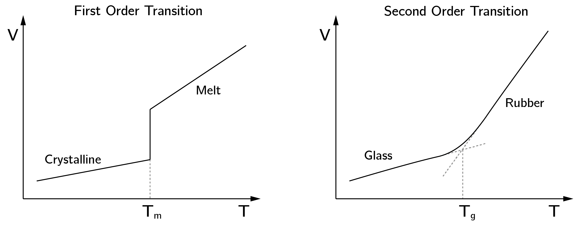
融解や凝固のような不連続相転移は多くのシステムで生じる。自然科学からの有名な例は、崩壊する橋、転覆する船、細胞分裂、そして氷河期の始まりのような気候転移である。社会科学からの例は、紛争、戦争、革命である。心理学からの例には、入眠、攻撃の爆発、過激化、恋に落ちること、突然の洞察、うつや嗜癖への再発、パニック、そして多安定知覚がある。ネッカーの立方体の知覚は有名な例である（figure fig-ch3-img2-old-14）。これらの心理的転移のモデルを構築し検証することは、困難だが実りある。これらの転移は、心理学的介入研究で通常観察される、より小さく、しばしばかろうじて有意な効果とは対照的に、振る舞いの大きな変化を伴う。
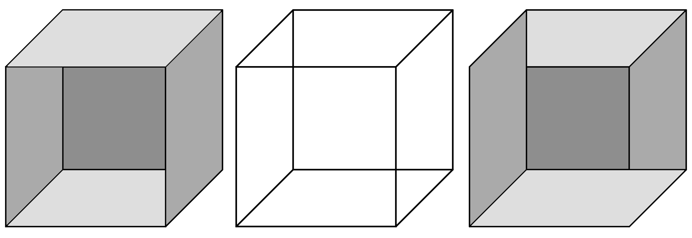
3.3 分岐理論とカタストロフィ理論
分岐は、平衡状態が消失したり、出現したり、分裂したりするときに生じる。簡単に言えば、分岐理論は、パラメータや条件の小さな変化が、数学的システムにおいてどのように結果の大きな変化をもたらしうるかを研究する。
分岐理論は数学の一分野であり、パラメータが滑らかに変化するにつれて、与えられた力学系の族の質的すなわち位相的構造に生じる変化を研究する。
カタストロフィ理論は分岐理論の一分野とみなすことができ、分岐の下位クラスを記述する。それはルネ・Thom (1977) によって発展させられ、クリストファー・Zeeman (1976) によって一般に広められた。本章でカタストロフィ理論に焦点を当てることにした理由は四つある。第一に、それは分岐の数少ない体系的な取り扱いの一つを提供する。体系的な取り扱いは、あらゆる種類の分岐を単に列挙するよりも効果的である。第二に、いったんカタストロフィ理論の基本を把握すれば、この理論に包含されない他の分岐について学ぶことがより容易になる。第三に、それは心理学と社会科学で最も広く用いられているアプローチである。最後に、この分野は、カタストロフィ理論の実践的応用のための経験的プログラムと統計的手続きを発展させてきた。
カタストロフィ理論は勾配系に関わる。これらは、ポテンシャル関数によって記述できる力学系である。ポテンシャル関数は、極小と極大をもつランドスケープと考えることができ、そこにボールを投げ込み、それがどこに行き着くかを見る。次節で論じる最も単純な場合は、二次の極小である。 また、ランドスケープが滑らかに形を変え、ある極小が消失した場合にボールに何が起こるかを研究することもできる。そのとき突然のジャンプが生じうる。
勾配系においては、エネルギーのような何らかの量が最小化または最大化される。数学におけるポテンシャル関数は、システムのポテンシャルエネルギーのランドスケープを記述し、システムのダイナミクスはこの関数の勾配によって決まる。
極小と極大は臨界点、すなわちポテンシャル関数の一階導関数が 0 になる点と呼ばれる。カタストロフィ理論は、ポテンシャル関数のいわゆる退化した臨界点を分析する。これらの分岐点で相転移が生じうる。トムは、（限られた制御パラメータの集合が与えられたとき）カタストロフィには七つの基本型しか存在しないことを証明した。私はまず数学的な導入から始め、主要な概念を説明した後、いくつかの心理学的な例を挙げる。 カタストロフィ理論におけるポテンシャル関数の役割の詳細な議論は、Gilmore (1993) の第1章のはじめに見出される。
退化した臨界点とは、ポテンシャル関数の一階導関数だけでなく二階導関数も零になる点である。
3.3.1 二次の場合
トムの定理は非常に込み入っていることで知られているが、基本的な概念はそれほど把握しにくいものではない。最も単純なポテンシャル関数は次のとおりである。
\[ V(X) = X^{2}. \tag{3.1}\]
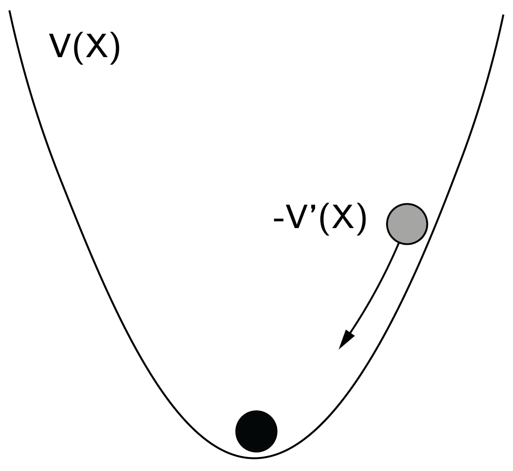
ランドスケープの中のボールを想像してみよ。ボールはポテンシャル関数の極小へと転がる（figure fig-ch3-img3-old-15）。私たちは学校で、これが一階導関数が 0 で二階導関数が正である点だと学んだ。一階導関数と二階導関数はそれぞれ \(V^{'}(X) = 2X\) と \(V^{''}(X) = 2\) である。\(X = 0\) で極小が見出される。
ポテンシャル関数は、次によって定義される力学系を記述する。
\[ \frac{dX}{dt} = - V^{'}(X). \tag{3.2}\]
これは理にかなっている。ボールが \((1,1)\) にあるとき、\(- V^{'}(X) = - 2\) であり、ボールは \(X = 0\) に向かって動く。しかし \(X = 0\) であれば、\(- V^{'}(X) = 0\) となり、ボールはもはや動かない。二次のポテンシャル関数の場合、固定点は一つしかない。\(V\) にパラメータと低次の項を加えること、すなわち \({aX + X}^{2}\) とすることで、その位置を動かすことはできるが、質的な形（一つの安定な固定点）は変わらない。また、二階導関数が正であることに注意しよう。これは、私たちが極大ではなく極小を扱っていることを教えてくれる（いわゆる二階導関数判定）。
多くの力学系がこのポテンシャル関数に従って振る舞う。3 目覚ましいことは何も起こらない。分岐もジャンプもない。より高次の項をもつポテンシャル関数を考えると、これは異なる。
3.3.2 折り目カタストロフィ
折り目（fold）カタストロフィは、次のポテンシャル関数によって定義される。
\[ V(X) = {- aX + X}^{3}. \tag{3.3}\]
この関数は \(X = 0, a = 0\) で退化した臨界点（分岐点）をもつ。というのも、この点で \(V^{'}(X) = - a + 3X^{2} = 0\) かつ \(V^{''}(X) = 6X = 0\) であり、一階導関数も二階導関数も 0 になるからである。何がこの点をそれほど特別にするのか。これは figure fig-ch3-img4-old-16 に例示されている。
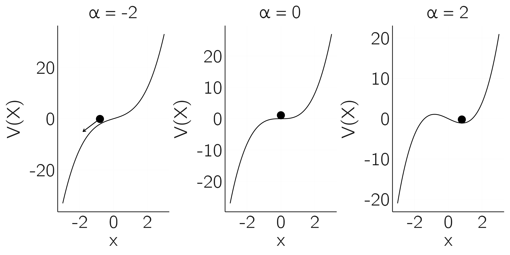
左のプロットでは \(a < 0\) であり、固定点はない。ボールはマイナス無限大へと転がり去る。これは一階導関数を零に設定することで確認でき、\(X = \pm \sqrt{{a}/{3}}\) が得られる。負の \(a\) については解がない。正の \(a\) の値は二つの解を与える。これは \(a = 2\) について右に示されているとおりである。正の解 \(X = \sqrt{2/3}\) は、この点における二階導関数が正であるので安定な固定点である。負の解 \(X = - \sqrt{2/3}\) は、この点における二階導関数が負であるので不安定な固定点である。
中央の図は、ちょうどこれら二つの場合の中間の場合を描いている。ここで平衡状態は変曲点、すなわち退化した臨界点である。固定点をもたないランドスケープから、一つは安定、一つは不安定な二つの固定点をもつランドスケープへと移るとき、この点で分岐が生じる。
これを可視化するもう一つの方法は、sec-ch2 でロジスティック写像について行ったように分岐図を作ることである。x 軸に \(0\) から \(2\) までの \(a\) を置く。y 軸に equation eq-ch3-3-old-7 の固定点である \(X^{*}\) をプロットする。安定な固定点には実線を、不安定な点には破線を用いる。図は figure fig-ch3-img5-old-17 に示されている。
折り目は振る舞いの突然のジャンプを伴わないことに注意しよう。それは二次相転移の一例である。
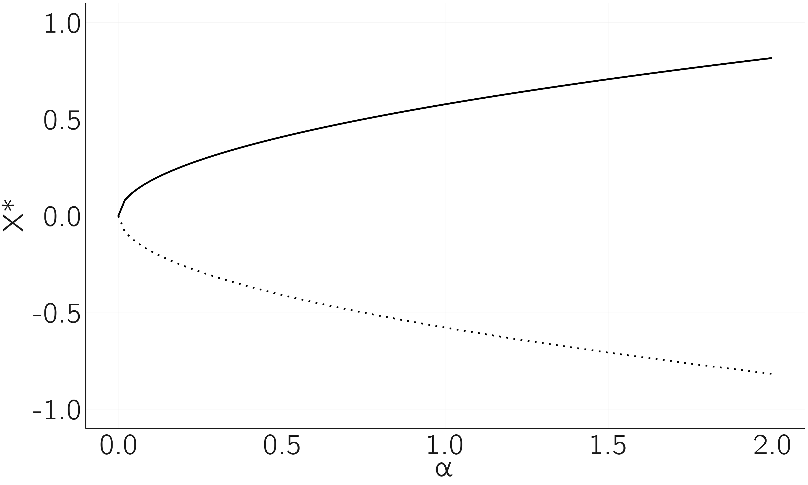
この分岐図はロジスティック写像ほど目覚ましくは見えないかもしれないが、その重要性はいくら強調してもしすぎることはない。折り目はいたるところにある！ 魅力的な本『曲線の誘惑（The Seduction of Curves）』において、Allen McRobie (2017) は、私たちが縁を見るときは常に折り目を見ている、ということを示している。Figure fig-ch3-img6-old-18 はこの本からのもので、そこで彼はさまざまなカタストロフィが芸術においてどのように現れるかを実演している。彼の YouTube 講義も推薦する。4
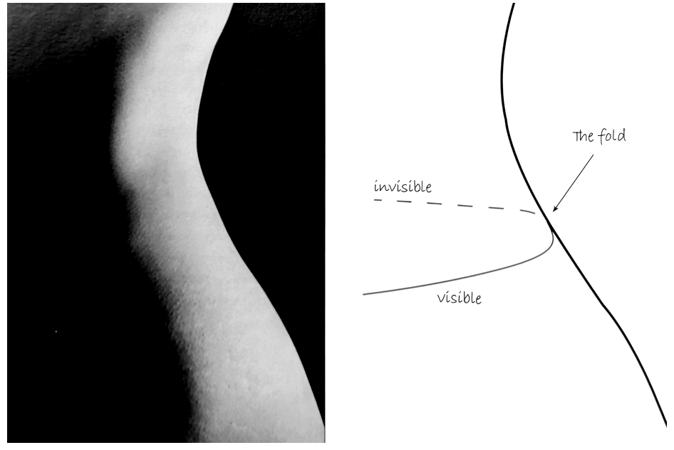
折り目カタストロフィは、進化論 (Dodson and Hallam 1977) から潜水における浮力 (Güémez, Fiolhais, and Fiolhais 2002) に至るまでの分野で研究されてきた。加えて、高次のカタストロフィは折り目から構成される。
折り目カタストロフィは、鞍点分岐、接分岐、あるいはブルースカイ分岐としても知られている。
3.3.3 カスプ・カタストロフィ
最もよく知られたカタストロフィであるカスプは、振る舞いの突然のジャンプを示す最も単純なカタストロフィである。カスプのポテンシャル関数は次のとおりである。
安定状態間の突然のジャンプは、一次相転移と結び付いている。
\[ V(X) = - aX - \frac{1}{2}bX^{2} + \frac{1}{4}X^{4}. \tag{3.4}\]
後の導出を少し容易にするために、2分の1と4分の1が加えられている。最高次のべきは今や 4 である。最初の二つの項は制御変数 \(a\) と \(b\) を含み、それぞれ正規変数、分裂変数として知られている。 なぜ三次の項がないのかと問うかもしれない。技術的でない答えは、そのような項は分岐の質的な振る舞いを変えないだろう、というものである。カタストロフィ理論は、構造的に安定な分岐を研究する。これは、方程式を（パラメータだけでなく）摂動させても振る舞いが根本的には変わらない、ということを意味する（さらなる説明は sec-Other-bifurcations と Stewart (1982) を参照）。
制御変数とは、その緩やかな変化がシステムの振る舞いに質的な変化を誘発するパラメータである。
私は、Desmos や GeoGebra のようなオンラインのグラフ計算ツールを用いて、この方程式について自分で最小限の研究を行うことを勧める（f(X)=-a X-(1/2) b X^2+(1/4) X^4 を貼り付けよ）。たとえば \(a = 1\)、\(b = 3\) に設定し、ポテンシャル関数のグラフを見よ。ボールが安定な固定点へと動く、という観点で考えよ。見て取れるはずなのは、三つの固定点があり、そのうち中央のものが不安定である、ということである。この双安定性は重要である。ここでも予測不可能性との関係がある。ポテンシャル関数と \(a\) と \(b\) の値を知っているにもかかわらず、ボールがどこにあるのかは依然として確信できない。それは二つの極小のいずれにあってもおかしくない。
もう一つの典型的な振る舞いは、正の \(b\) の値（\(b = 2\)）について、\(a\) を（-2 から 2 まで上下に）ゆっくりと変化させるときに生じる。これは figure fig-ch3-img7-old-19 に示されている。\(a = 1.5\) 付近で突然のジャンプが見られる。左の固定点が安定性を失い、ボールは他方の極小へと転がる。
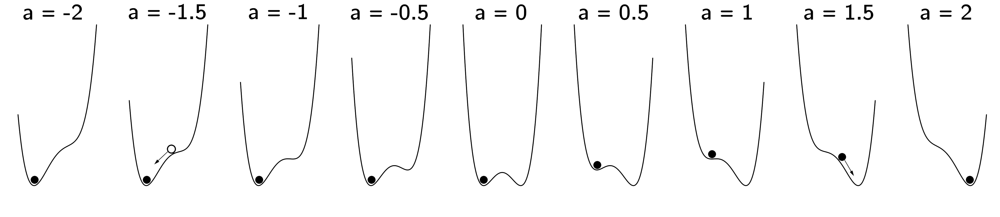
さて、\(a\) を 2 から -2 へと減少させるとどうなるかを考えよう。 この場合、ボールは \(a = - 1.5\) になるまで右の極小にとどまる。ジャンプがどこで起こるかは、正規変数である \(a\) の変化の方向に依存する。ジャンプの遅れはヒステリシスと呼ばれる。ヒステリシスは、複雑系における変化ないし変化の欠如を理解するうえで非常に重要である。ボールがより浅い極小にある状態（figure fig-ch3-img7-old-19 における \(a = 0.5\) について）は、しばしば準安定状態ないし局所的に安定な状態と呼ばれる。
ヒステリシスは遅れ、すなわち変化への抵抗を意味する。準安定状態は、しばらくの間安定であるように見えるが、その大域的に安定な状態にはない。
精神物理学的法則に関する古典的な論文において、Stevens (1957) は、明るさや大きさのような性質が低から高へ、またその逆へと体系的に変化させられるとき、知覚判断にヒステリシスが生じることを報告している。この論文で彼はこう述べている。「私はそれを記述しようとしているのであって、説明しようとしているのではない。どう説明すればよいのか、私にはわからない」。私にとって、カスプは少なくとも部分的には、なぜヒステリシスが生じるのかを説明する。
Gilmore (1993) は、システム内のノイズについて重要な指摘をした。ノイズが多ければ、ジャンプはより早く起こり、ヒステリシス効果はより少なくなるか、まったく見られなくなる。これは「遅延」の慣行と対比して、マクスウェルの慣行と呼ばれる。したがって、ヒステリシスを実証するには精確な実験的統制が必要である。
もう一つの非常に興味深いパターンは、\(a = 0\) で \(b\) を増加させるときに生じる（figure fig-ch3-img8-old-20）。
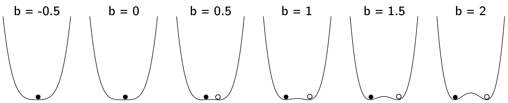
低い \(b\) については、一つの安定な固定点があり、それが不安定になる。それは二つの新たな安定なアトラクタへと分裂する。 折り目について行ったように、\(a\) と \(b\) の関数として \(X\) の平衡状態を示す分岐図を作れる。\(a\) 軸に沿ってヒステリシスが見られ、\(b\) 軸に沿って分岐（ダイバージェンス）、すなわちしばしば熊手分岐と呼ばれるものが見られる（figure fig-ch3-img9-old-21）。
熊手（ピッチフォーク）分岐は、パラメータが変化するにつれて単一の平衡状態が三つ（二つの安定と一つの不安定）に分裂するときに生じ、熊手の形に似ている。
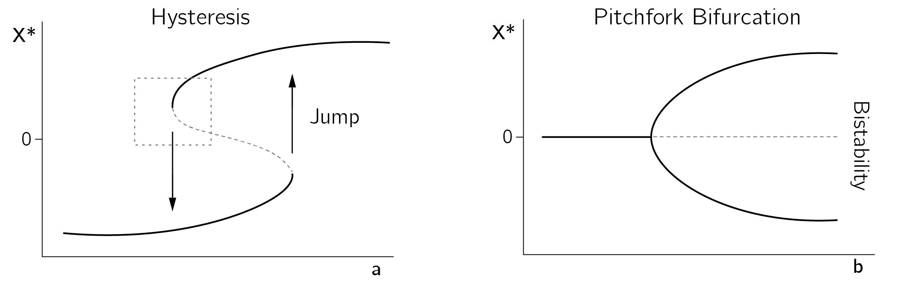
\(a\) と \(b\) の複合的な効果を描くには三次元プロットが必要であり、それはヒステリシスの図と熊手の図を組み合わせたものである（figure fig-ch3-img10-old-22）。
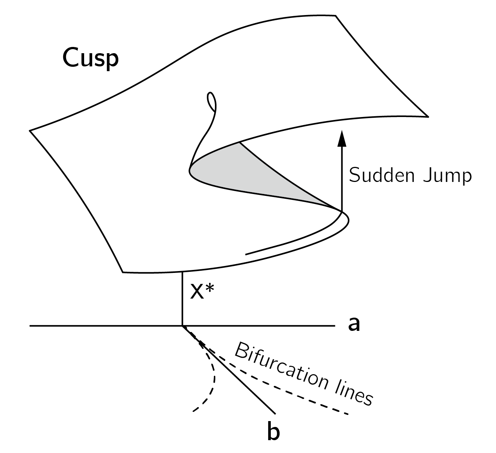
カスプの図は、一階導関数を 0 に設定することで数学的に表現できる。
\[ V^{'}(X) = {- a - bX + X}^{3} = 0. \tag{3.5}\]
この種の方程式は三次方程式と呼ばれる。5 カスプの退化した臨界点は、一階導関数と二階導関数を 0 に設定することで見出せる。これはあなたの高校数学の訓練でぎりぎり手の届く範囲であり、演習として残しておく。結果は次のとおりである。
\[ 27a^{2} = 4b^{3}. \tag{3.6}\]
この方程式は、一階導関数と二階導関数がともに 0 になり、突然のジャンプが生じる分岐線を定義する（figure fig-ch3-img10-old-22 を参照）。分岐線の間の領域が分岐集合である。この領域では、カスプは三つの固定点をもち、そのうち中央のものが不安定である。中央のこれらの不安定な状態は到達不能領域と呼ばれ、カスプの図で灰色に網掛けされている。分岐線は \((0,0,0)\) で交わる。この点では三階導関数も 0 である。これがカスプ点である。
3.3.4 カスプモデルの例
カスプを例示するのに、私は常に名刺を用いる（figure fig-ch3-img11-old-23）。この例を試してみることを勧める（クレジットカードでは試すな）。二つの力で遊べる。\(Fv\) は鉛直方向の力であり、カスプにおける分裂制御変数（\(b\)）である。\(Fh\) は水平方向の力であり、カスプにおける正規変数（\(a\)）である。\(Fv = 0\) のときにのみ滑らかな変化が得られるが、鉛直方向の力を加えると突然のジャンプとヒステリシスが得られることに注意しよう。一つの非常に重要な現象は、\(Fv = 0\) のときカードには「記憶」がない、ということである。カードをある位置に押しやることはできるが、この力を解放するや否や（\(Fh\) を 0 に戻すや否や）、カードは中央の位置に戻る。鉛直方向の圧力ではこうはならない。カードを左または右の位置に強制すれば、水平方向の力を取り除いても、それはそこにとどまる。カードには記憶がある。
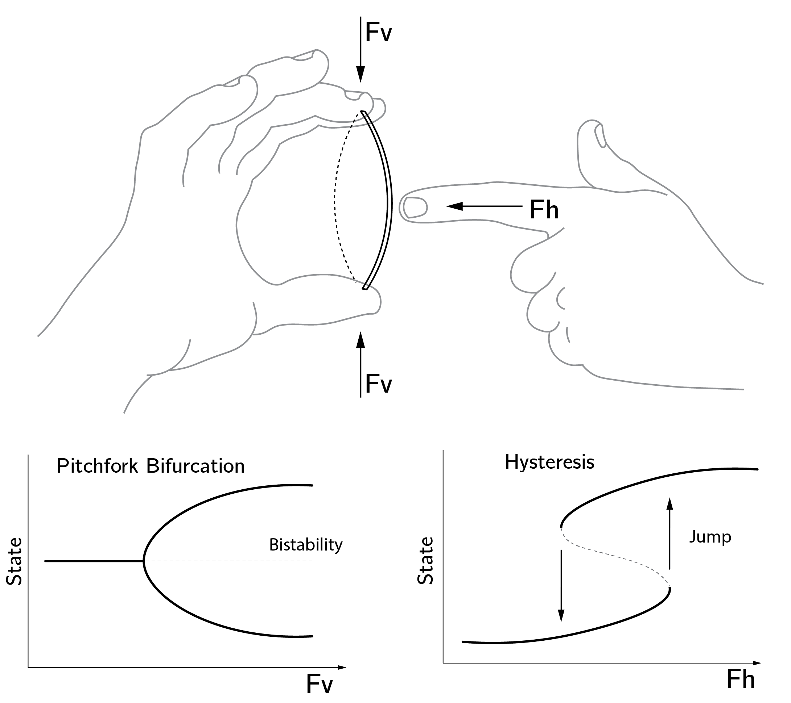
これは単純に見えるが、そのような弾性的な曲げ構造の数学的分析は、それ自体が巨大な話題である (Poston and Stewart 2014)。水の凝固もまたカスプである。近似として、水の密度が振る舞い変数、温度が正規変数、圧力が分裂変数として作用する、と言えるだろう（より繊細な分析については Poston and Stewart (2014) の第14章を参照）。水の完全な相図を研究することは非常に教育的である（figure fig-ch3-img12-old-24）。それは平衡状態の地図とみなすことができる。この種の地図作成は、心理学と社会科学において極めて有用であろう。
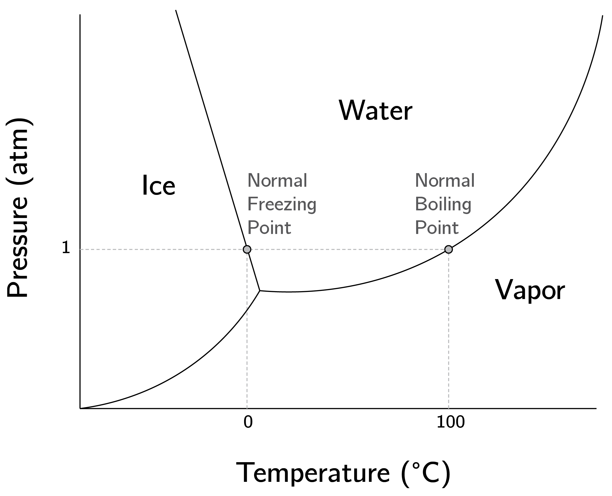
カスプの心理学的な例は、態度の突然のジャンプに関わる (Latané and Nowak 1994; van der Maas, Kolstein, and van der Pligt 2003)。態度については後の章でさらに詳しく論じる。一般に、私たちは人生の多くの事柄（政治、蛇、ハンバーガー、スポーツ）に対して比較的安定した態度をもっているが、時にそれらは変化し、まれには急進的に変化する。たとえば、突然、陰謀論者、無神論者、あるいは菜食主義者になるかもしれない。一例は妊娠中絶に対する態度である（figure fig-ch3-img13-old-25）。
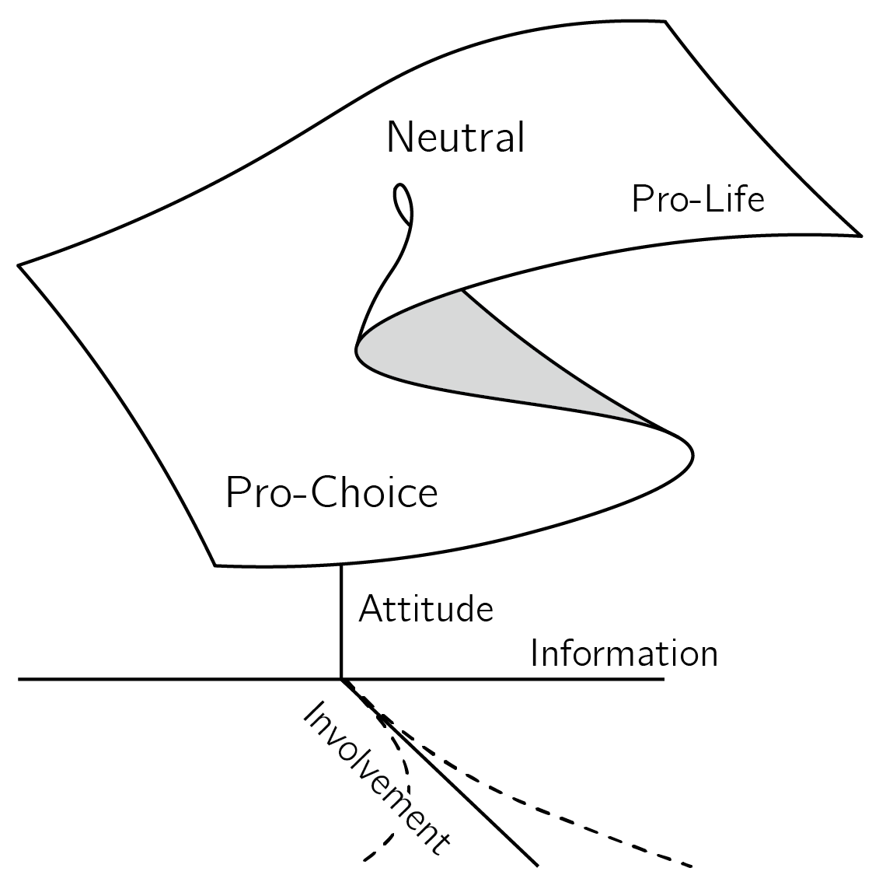
カスプのモデリングは、振る舞い変数の状態を定義することから始まる。この場合、双安定カスプの二つの状態は、対立する二つの立場、すなわちプロライフ（生命尊重）6 とプロチョイス（選択尊重）である。\(a = 0, b = 0\) と結び付いたもう一つの状態は、中立的な状態、すなわち「わからない」あるいは「関心がない」という立場である。
正規変数（\(a\)）と分裂変数（\(b\)）は、情報と関与として解釈される。情報は、人々がプロライフの立場にあるかプロチョイスの立場にあるかに影響を与える諸要因の集まりである。政治的・宗教的な志向、そして個人的な経験が、この全体的な要因に加わる。この情報変数を構成する一つの方法は、因子分析または主成分分析を通じてである。
分裂要因である関与もまた、いくつもの効果（重要性、注意）を組み合わせたものである。主たる考えは、独立変数には二つのタイプがある、というものである。あるものは（主に）正規軸に沿って働き、あるものは（主に）分裂軸に影響する。
このモデルの含意は、低い関与については変化が連続的である、ということである（figure fig-ch3-img13-old-25）。プロライフないしプロチョイスの立場を支持する何らかの新しい情報を人々に提示することは、中程度の効果をもつだろう。名刺で実証したように、一つの問題は、関与していない人には「記憶がない」ということである。この人に影響を与えるのをやめるや否や、彼らは中立的な「関心がない」という立場へと漂っていく。人々が深く関与しているとき、私たちにはもう一つの問題がある。すなわち、彼らはヒステリシスを経験する。 このヒステリシス効果が大きいとき、説得はまったく機能しない。政治的議論に関わったことがあれば、おそらくそれを自分で経験しているだろう。
ヒステリシス効果のために、新たな情報で人々を説得することは非常に難しい。
しかし、基礎となる情報の変化が十分に大きければ、態度は突然のジャンプを示しうる。それらが中心的な態度であれば、それは人生の大きな出来事となりうる。そのような転移についての逸話的証拠は多い (Ebaugh 1988) が、そのような効果を態度測定の実際の時系列で捉えることは非常に難しい。カスプモデルと整合するもう一つの効果はアンビバレンス（両価性）である。 アンビバレンスは高い関与と結び付いている。均衡した情報（\(a = 0\)）をもつ深く関与した人々は、極端な立場の間で振動しうる（figure fig-ch4n-img2-old-50 を参照）。最後に、熊手分岐は争点や政治の分極化を説明できる。
態度のカスプモデルにおいて、アンビバレンスは中立であることと同じではない。中立的な人々の集団において、たとえば議論のために関与が増大すると、彼らは二つの極端な立場に分裂しうる（分極化）。
カスプのような振る舞いのもう一つの心理学的な例は多安定知覚である。Stewart and Peregoy (1983) は、男性の顔または女性の姿の知覚を振る舞い変数として用い、分裂変数を細部の量、正規変数を男性／女性の区別に関係する細部の変化とするモデルを提案した。結果は figure fig-ch3-img14-old-26 に示されている。
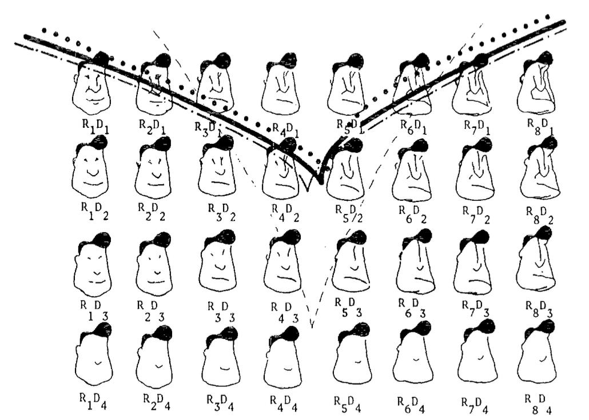
3.3.5 高次のカタストロフィ
カスプが折り目から構成されていることに注意しよう。これは figure fig-ch3-img9-old-21 のヒステリシスの図で最もよく見て取れる（点線の長方形を参照）。高次のカタストロフィはカスプと折り目の要素を生む。ポテンシャル関数 \(V(X) = {- aX - \frac{1}{2}bX^{2} - \frac{1}{3}cX}^{3} + \frac{1}{5}X^{5}\) をもつ燕尾（スワローテイル）カタストロフィは、三つの折り目分岐の面が二つのカスプ分岐の線で交わり、それらがさらに単一の燕尾分岐点で交わるものから成る。これを可視化するには四次元空間が必要であり、それは難しい。カタストロフィ理論に関するウィキペディアのページには、役立つかもしれない回転するグラフがいくつかある。蝶（バタフライ）カタストロフィは、最高次の項として \(X^{6}\) をもつ（そして四つの制御変数をもつ）。
このカタストロフィについては、態度のモデリングに関連して sec-Tricriticality で論じる。7 他のカタストロフィは、一つではなく二つの振る舞い変数をもつ。しかし、カタストロフィ理論の応用の圧倒的大多数はカスプに焦点を当てており、これが本章の残りの焦点でもある。カタストロフィ理論の全容を提示する良い（しかし容易ではない）本が多くある (Gilmore 1993; Poston and Stewart 2014)。
蝶カタストロフィは、三峰性の振る舞いを観察するときに関心の対象となる。
3.3.6 他の分岐
分岐理論とは対照的に、カタストロフィ理論は構造的に安定な局所分岐に限られる。
分岐理論はまた、構造的に安定でない分岐や、いわゆる大域分岐も扱う。
構造的に安定でない局所分岐の例は、超臨界分岐（\(\frac{dX}{dt} = aX - X^{2}\)）と熊手分岐（\(\frac{dX}{dt} = bX - X^{3}\)）である。熊手はカスプの一部であり、構造的に安定でない。というのも、それは追加の項 \(a\) によって摂動されうるからである。\(a\) が 0 に等しくなければ、それは熊手を歪める（figure fig-ch3-img15-old-27 を参照）。
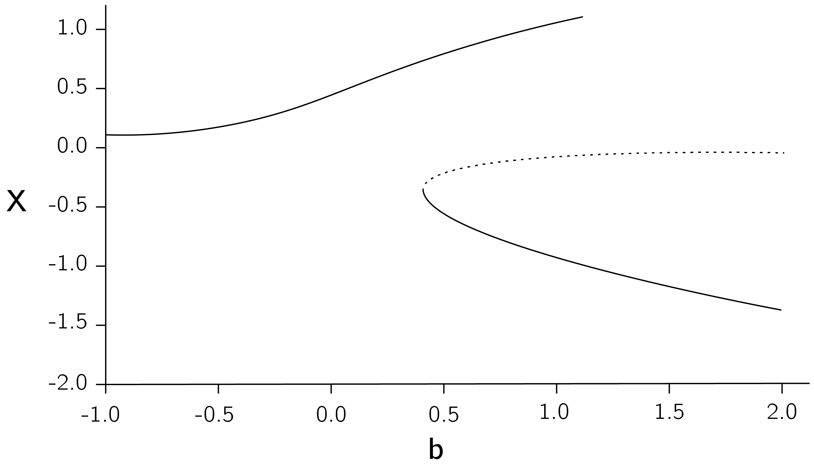
すでに見たもう一つは周期倍化分岐である。これは、固定点が周期 2 のリミットサイクルに変化したとき、ロジスティック写像で生じた。最後に、大域分岐は、リミットサイクルが発散するときのように、位相空間内の小さな近傍に局在化できない (Guckenheimer and Holmes 1983)。しかし、心理学や社会科学における大域分岐の応用を私は知らない。
3.4 カタストロフィモデルの構築
3.4.1 メカニズム的モデル
妊娠中絶に対する態度のモデルは、メカニズム的モデルと対比して、現象論的モデルと呼ばれる。
現象論的モデルにおいては、カスプの存在を仮定し、関与する変数について仮説を立てる。メカニズム的アプローチにおいては、カスプは基本的な仮定ないし第一原理から導かれる。
メカニズム的アプローチは、物理科学や生命科学ではるかに一般的である。一例は、ファン・デル・ワールス方程式によって記述される水の相転移である。Poston and Stewart (2014) は、ファン・デル・ワールス方程式がどのようにカスプ方程式の形をとるように再パラメータ化できるかを示している。その利点は、温度と圧力がカスプの制御変数とどのように関係しているかを学べることである。これは、この相転移のダイナミクスの完全な理解を与えてくれる。
第4章 sec-Analogical-modeling-Budworms-and-Beers で私が心理学的モデルとして用いる一つのモデルは、トウヒノシントメハマキ（spruce budworm）の大発生のモデルである。これは30〜40年ごとに生じ、数千万ヘクタールの樹木の落葉をもたらす (Ludwig, Jones, and Holling 1978)。このモデルは次のとおりである。
\[ \frac{dN}{dt} = r_{b}N\left( 1 - \frac{N}{K} \right) - \frac{BN^{2}}{A^{2} + N^{2}}. \tag{3.7}\]
ここで \(N\) はハマキの個体群の大きさ、\(r_{b}\) は成長率、\(K\) は環境収容力、\(B\) は捕食の上限、そして \(1/A\) は捕食者の応答性である。
第一の部分はロジスティック成長方程式である。\(N\) は速度 \(r_{b}\) で \(K\) まで成長する。これは差分方程式ではなく微分方程式であることに注意しよう。連続時間のロジスティック成長にはカオスはない。第二の部分は捕食関数であり、\(B\) で平坦になる増加する形をもつ。この関数の曲率は \(A\) によって決まる。高い \(A\) は関数をより急でなくする。これは、捕食がハマキの増加にかなりゆっくりと反応する、ということを意味する（このモデルの構築については後で詳述する）。
このモデルへの解析的アプローチは、モデルがカスプの形をとるように再パラメータ化することである。そのような再パラメータ化を自分で行うのはそれほど容易ではない。その考えは、モデルパラメータの関数である、より少数の新たな変数の集合を作ることである。このモデルにとって便利な再パラメータ化は次のとおりである。
\[ r = \frac{A\ r_{b}}{B}\text{ and}\ q = \frac{K}{A}. \tag{3.8}\]
これら二つの「構成された」制御変数を用いて、figure fig-ch3-img16-old-28 のようにカスプの分岐線を描ける。
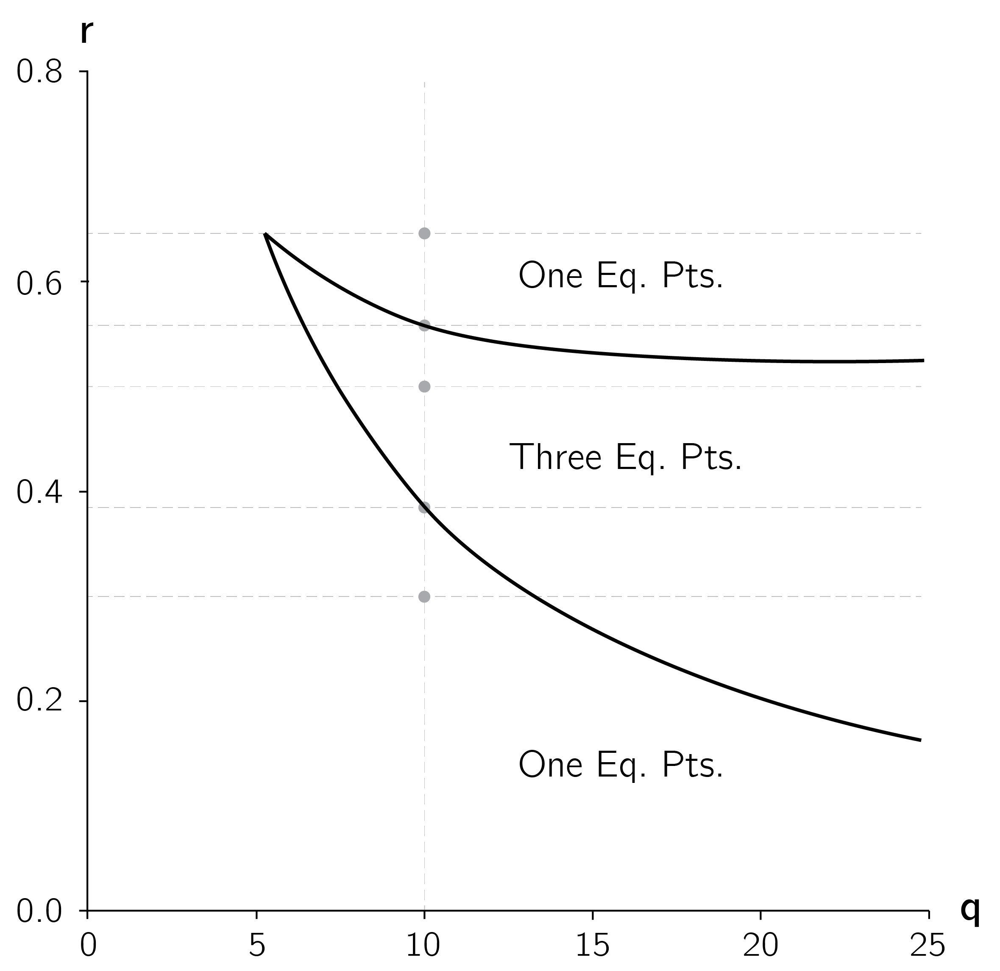
後の章ではメカニズム的アプローチの心理学的な例を論じるが、転移のモデルに関する限り、これらはまれである。現象論的アプローチのほうがはるかに一般的である。
3.4.2 現象論的モデル
態度のカスプモデルは典型的な現象論的モデルである。私たちは単に、カスプが態度のモデルであると仮定する。現象論的モデルは、システムを駆動する基礎的なメカニズムの深い理解を提供しないので、メカニズム的モデルほど説得力がない。しかし心理学と社会科学では、あまり選り好みはできない。他の多くの、言語的に述べられた態度モデルと比べると、カスプ態度モデルはかなり精確である。それはいくつもの現象を含意し、検証可能である。
現象論的モデルを立てることは自明な作業ではない。私はこれについていくつかの指針を提案する。第一に、振る舞い変数を定義せよ。双安定なモードについて考えることが重要である。それらは何か。その間にある到達不能状態は何か。これらの状態の間でジャンプが起こりうるか。カスプの後方にある中立状態は何か。これらの問いに答えられないなら、カスプが適切なモデルであるかどうかを再考すべきである。
第二に、制御変数を選べ。何が正規変数となりうるか、何が分裂変数となりうるか。これらは容易な問いではない。時には候補が多すぎることもある。態度のカスプモデルについては、関与の代わりに、興味、重要性、感情的価値などを提案できるだろう。この場合、私は分裂軸を、これらの少しずつ異なる変数すべての共通因子と考える。他の場合には、良い候補がない。figure fig-ch3-img14-old-26 の例では、正規軸に沿って何が操作されているのかが正確には明らかでない。選択をしたなら、分裂値の高い値において、正規変数の変化が突然のジャンプとヒステリシスをもたらしうるかどうかを確認するとよい。また、熊手分岐が理論的に意味をなすかどうかも確認せよ。8
ここにはもう一つの問題がある。 一部の現象論的モデルでは、制御変数が45度回転させられる。最も有名な例は、ゼーマンの (1976) 犬の攻撃性のモデルである（figure fig-ch3-img17-old-29）。
カスプモデルの制御変数は、解釈を容易にするために回転させることができる。
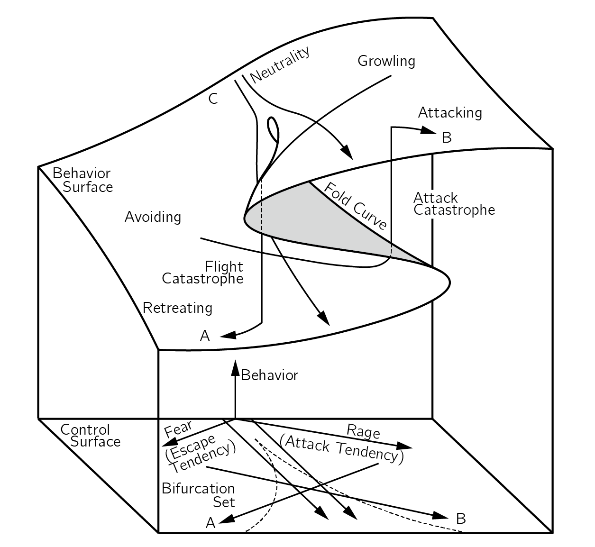
制御変数は恐怖と怒りである。このような回転において、正規変数は恐怖と怒りの差であり、分裂変数は恐怖と怒りの和である。もう一つの例は、反応時間課題における速度・正確性トレードオフの私たちのモデルに見出される (Dutilh et al. 2011)。現象論的モデルを構成するとき、制御変数を定義するこれら二つの選択肢を考慮すべきである。
仕事やスポーツにおけるパフォーマンスの破局的な低下を説明するために、Hardy and Parfitt (1991) は、認知的不安を分裂要因、生理的覚醒を正規要因とするカスプモデルを提案した。その考えは、高い認知的不安の水準では、覚醒の増減がヒステリシス効果を含む突然の変化をもたらす、というものである。Hardy (1996) はこのモデルのさらなる検証を提示しており、これは Cohen, Pargman, and Tenenbaum (2003) によって批判されている。蝶モデルへの拡張は Guastello (1984) と Hardy, Woodman, and Carrington (2004) で提示されている。
カスプモデルは嗜癖についても開発されてきた (Guastello 1984; Mazanov and Byrne 2006)。Witkiewitz et al. (2007) は、遠位のリスクを分裂軸、近位のリスクを正規軸として用いることを提案している。このモデルは、アルコール依存症に対するさまざまな治療の有効性についての八年にわたる多施設調査である Project MATCH の著名なデータセットを用いて検証されている。
最後の例として、Paulos (2008) が数学とユーモアに関する魅力的な本で提示したユーモアのモデルを挙げる。パウロスはこのモデルをだじゃれの文脈で説明している。彼の例は「クラブ（棍棒）は幼い子どもに適していると思いますか」で、そのオチは「優しさが通用しないときだけね」である。これはおそらく子どものいる人にだけ面白い。パウロスは、犬の攻撃性モデルのように回転させた制御軸を用いる。だじゃれの解釈が振る舞い軸である。一方の軸は「クラブ」の第一の意味を、他方の軸は第二の意味を表す。分岐集合は曖昧な領域を表す。冗談は、一つの意味から別の意味へのジャンプを含む。 パウロスは、このカスプモデルが認知的不一致理論、さまざまなユーモアの心理学理論、そして笑いの解放理論を組み合わせたものだと主張している。Tschacher and Haken (2023) は、関連するユーモアの複雑性説明を提案している。
オチは、笑いを通じた緊張の解放を伴う、解釈の破局的な変化を強いる。
3.5 カタストロフィモデルの検証
3.5.1 カタストロフィ・フラグ
突然とはどれほど突然なのか。気候変動の転移が数百年を要するとき、それはどのようにして段階（すなわち氷河期）間の転移とみなせるのか。ボールが新たな極小に向かって転がっているときでさえ、転がるのに時間がかかる。 しかしそうすると、ロジスティック成長パターンに見られるような連続的な加速との違いは何なのか。加速と、突然で不連続なジャンプの時間経過は、非常に似て見えるかもしれない（figure fig-ch3-img18-old-30）。
突然の転移は瞬時ではないが、その中間状態は不安定である。
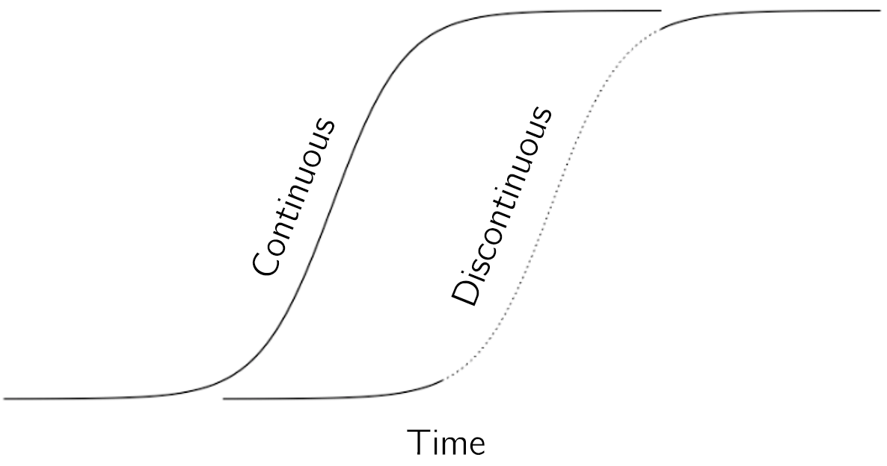
実際、時系列データという点では、それらはまったく同じに見えるかもしれない。主たる違いは、連続的な場合には中間の値が安定である、ということである。加速は、その位置を素早く変える二次の極小として理解できる。過程の途中で操作した制御変数を凍結して過程を止めれば、状態は中間の値にとどまる。これらの中間の値はすべて安定な値である。不連続な過程で操作変数を凍結すれば、それは安定な状態へと動き続ける。この場合、中間の状態は不安定である。ボールは転がり続け、そして残念ながら気候は変わり続ける。
実際に時系列データを用いる場合、これは行うのが難しい区別である。それは、加速を相転移から区別するには単純な時系列では不十分である、ということを意味する。ではどうやって二つの過程を区別するのか。カタストロフィ理論の文脈で、Gilmore（1993）はカタストロフィ・フラグを提案した。これらは、データに見て取れるカスプに関連する現象である。これらのどれか一つだけではカスプを示すのに十分ではないが、まとめて考えると、その存在についての説得力のある証拠を提供する。
以下の小節では、これらのフラグを定義し、例を用いてその心理学における応用を例示する。第一のフラグは突然のジャンプである。
3.5.1.1 突然のジャンプ
突然のジャンプは十分ではない（加速のためかもしれない）が、時系列に突然のジャンプを実証することは（他のフラグとの関連でも）有用である。突然のジャンプの統計的検出は、いくつもの技法を用いて可能である。Figure fig-ch3-img19-old-31 は、研究中に抗うつ薬を徐々に中止した患者の、SCL-90-R のうつ下位尺度を用いた抑うつ症状の週ごとの生の測定値を提示している。参加者と研究者は用量減少の計画について盲検化されていた (Wichers, Groot, and Psychosystems 2016)。一つの問いは、この減少がうつ状態への突然のジャンプをもたらしたかどうかであった。変化点検出法 (James and Matteson 2014) を用いて、私たちは 18 週目に、ブートストラップした \(p\) 値 .005（変化点がないという帰無仮説のもとで）でジャンプを見出した。
突然のジャンプは、平衡状態の振る舞いの大きく速い変化である。
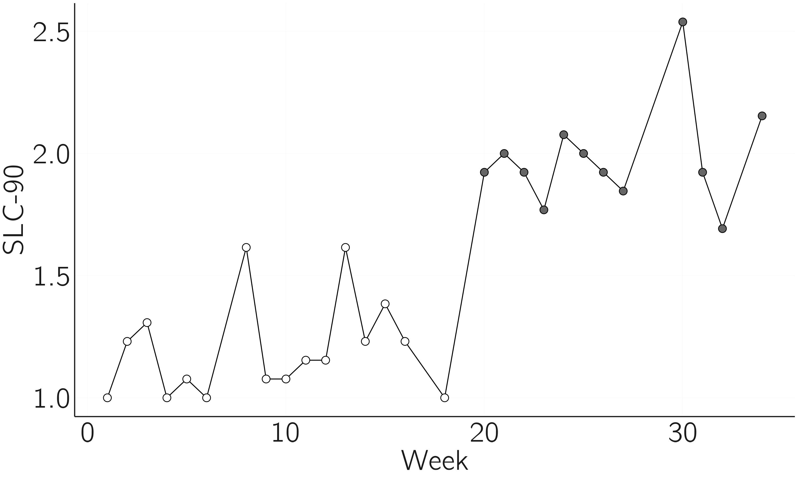
変化点分析のための多くの方法が Burg and Williams (2022) で開発され、比較されている。
この図のコードは次のとおりである。
layout(t(1)); par(mar = c(4,4,1,1))
x <- read.table('data/PNAS_patient_data.txt', header = TRUE)
library(ecp) # if error: install.packages('ecp')
e1 <- e.divisive(matrix(x$dep, , 1), sig = .01, min.size = 10)
plot(x$week, x$dep, type = 'b', pch = (e1$cluster-1) * 16 + 1, xlab = 'Week',
ylab = 'SLC-90', bty = 'n', main = 'Jump to depression')3.5.1.2 多峰性
多峰性（カスプの場合は双峰性）は重要で使いやすいフラグである。というのも、それは横断的データで検証できるからである。頻度分布における多峰性を検証するために有限混合モデルが開発されてきた (McLachlan, Lee, and Rathnayake 2019)。
一例は figure fig-ch3-img20-old-32 に示されている。これらのデータは保存予測課題からのもので、そこで子どもは、水が注がれたとき二つ目のコップの水位がどうなるかを予測しなければならない。得られたデータと、二つの正規分布の混合の当てはめが右に示されている。データは明らかに双峰性であり、保存学習における転移の仮説を支持している (van der Maas and Molenaar 1992)。これらのデータは Dolan and van der Maas (1998) で、構造方程式モデルに従う多変量正規混合分布を当てはめるために用いられた。
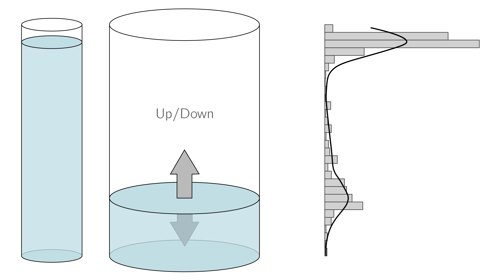
コードは次のとおりである。
x <- unlist(read.table('data/conservation_anticipation_item3.txt'))
library(mixtools) # if error: install.packages('mixtools')
result <- normalmixEM(x)
plot(result, whichplot = 2, breaks = 30)多峰性、混合、そしてクラスタリングに焦点を当てた統計の一分野がまるごと存在する。関連する R パッケージの概観を提示するブログがいくつかある (Arnaud 2021)。隠れマルコフモデルを用いた心理学からの詳細な例がいくつか Visser and Speekenbrink (2022) で提示されている。
発達過程における突然のジャンプを捉えるには、多くの高頻度のデータが必要である。意見の突然の変化もまれである。しかし、妊娠中絶のような争点に関する言明について判断を求められた多数の人々についてデータを集めることは容易である。これらの判断が双峰的に分布していれば、これは相転移と整合する。双峰的なデータは、加速の過程によっても生み出されうる。その場合、時系列は主に加速の前後のデータ値から成る。したがって、双峰性は十分ではない。それは必要条件とみなすことができるので、私は常に横断的な多峰性の研究から始めることを勧める。それらが失敗するなら、仮説を再考したほうがよいかもしれない。私は算数学習の測定において多峰性をしばしば探したが、説得力のあるものは決して見つからず、そのために仮説を考え直すことになった。
突然のジャンプに対する多峰性の利点は、それを横断的データで検証できることである。
3.5.1.3 到達不能性
到達不能性とは、振る舞い変数のある値が不安定である、ということを意味する。名刺は良い例である。ある程度の鉛直方向の圧力を加えれば、何を試そうとも、カードを中央の位置にとどまるよう強制することはできない。それは不安定である。
到達不能性は、突然のジャンプと双峰性が加速のためであるという対立仮説を棄却するのに関係する。
Dutilh et al. (2011) の実験2で、私たちはこのフラグに焦点を当てた。私たちの仮説は、単純選択反応課題においては、速い推測状態と、より遅い刺激駆動反応状態の間に相転移がある、というものであった。その考えは、被験者に速度を上げるよう強制すれば、パフォーマンスに破局的な低下（ほぼ100%正答から50%正答へ）が生じる、というものである。
私たちは、被験者が一連の単純選択項目（語彙判断課題）に反応するゲームを作った。系列の長さは被験者には知らされていなかった。系列の終わりに、正答率が75%にどれだけ近いかに応じて報酬が与えられた。速度も報酬の対象であったが、はるかに少なかった。したがって、私たちは被験者に到達不能状態にあるよう求めた。情報蓄積モデルに基づく対立仮説は、相転移はなく、75%の正確性で反応するには境界の正しい設定が必要である、というものであった（sec-Response-time-models を参照）。
被験者は、対立モデルに従って教示された場合でさえ、速い推測モードと、より遅い刺激統制モードの間を切り替えることで課題を解いたようであった。したがって、75%の中間状態は不安定であるように見えた。
3.5.1.4 ダイバージェンス
ダイバージェンス、すなわち熊手分岐、平衡状態の分裂は、分裂変数の操作を必要とする。態度の場合、私たちはこれを関与ないし何らかの関連する変数だと仮定する。van der Maas, Kolstein, and van der Pligt (2003) で、私たちは Stouffer et al. (1949) のデータセットを再分析した。これは Latané and Nowak (1994) がカスプモデルの証拠として提示したものである。態度は復員に関わるもの（0、不賛成、から 6、賛成、まで）であり、回答者は自分の答えについてどれだけ強く感じているかを示すよう求められた（強度 0 から強度 5 まで）。感情の強度が低い場合、データは正規分布するが、強度が高い場合、データは双峰的に分布する（figure fig-ch3-img21-old-33 を参照）。
多峰性を検証した後、ダイバージェンスを検証することは理にかなった次の段階である。
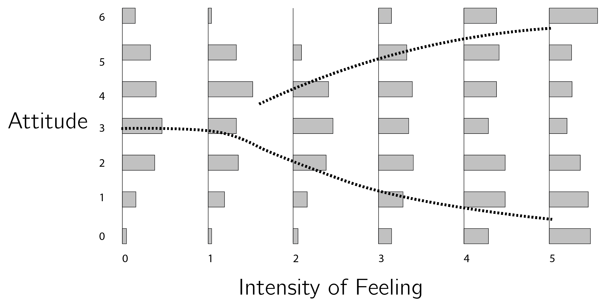
3.5.1.5 ヒステリシス
ヒステリシスを検証するには、正規変数をゆっくりと増加させ、また減少させ、突然のジャンプが遅れて生じるかどうかを検証する必要がある。私たちは、特定の次元（支点からの距離）を体系的に変化させたピアジェの天秤課題を用いて、比例推論におけるヒステリシスを実証した (Jansen and van der Maas 2001)。私たちはまた、反応時間課題で被験者を速く反応させると、最終的に正確性の破局がもたらされる、と仮定した。この主張を支持するために、私たちは反応時間の双峰性と、速度・正確性トレードオフにおけるヒステリシスを実証した (Dutilh et al. 2011)。多安定知覚のカスプモデルを支持するために、私たちは四重運動パラダイムを用いた (Ploeger, van der Maas, and Hartelman 2002)。この知覚パラダイムでは、二つの光が同時に提示される。まず長方形の対角に位置する二つの角からの一対、次に長方形の他の二つの対角の角からの二つ目の一対である。通常、鉛直または水平の見かけの運動のいずれかが知覚される。アスペクト比（すなわち四重奏の高さと幅の比）を徐々に増加または減少させることで、二つの見えの間のジャンプにおけるヒステリシスが実証された（figure fig-ch3-img22-old-34 を参照）。
ヒステリシス、すなわち突然のジャンプの遅れは、正規制御変数の洗練された操作を必要とする。
Ploeger, van der Maas, and Hartelman (2002) で、私たちは、ヒステリシスが単に遅延した反応のためであるという対立的な説明を排除するために、修正極限法という特別なデザインを用いた。切り替えは常に中央（アスペクト比 1）で生じるが、自己報告が遅延している、という可能性もある。修正極限法では、被験者は試行中には反応せず、試行全体の後にのみ反応する。試行の長さを変えることで、被験者がどのパラメータ値で切り替えを知覚するかを決定できる。
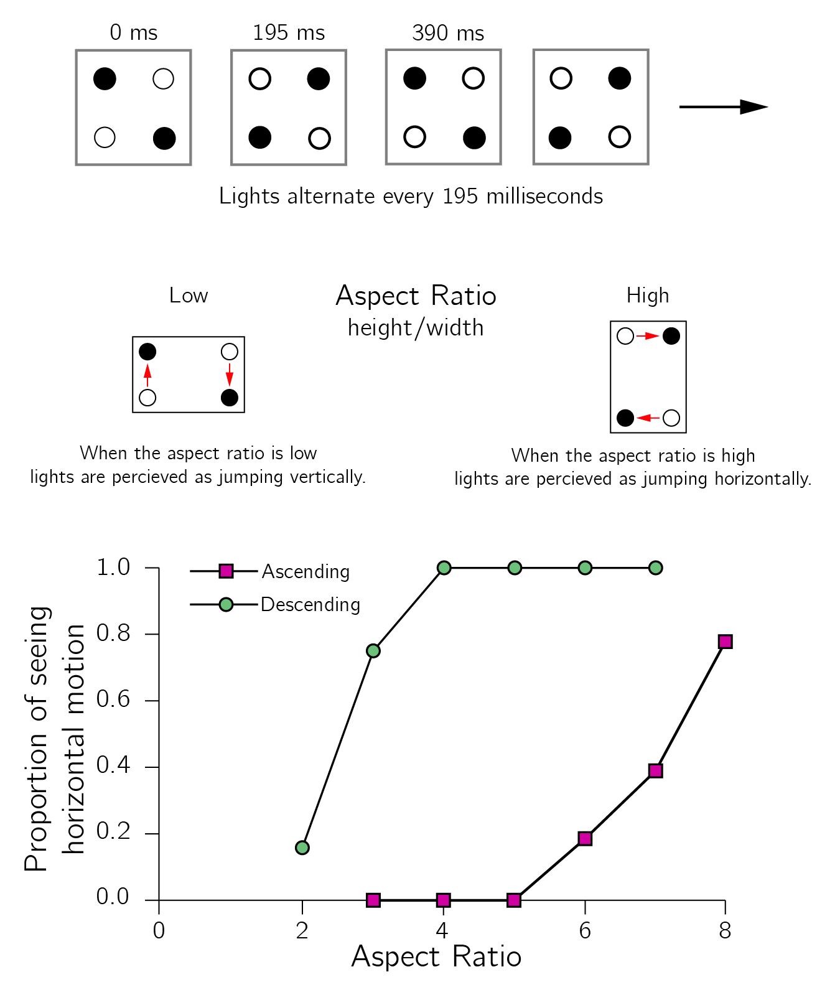
3.5.1.6 異常分散、線形応答の発散、そして臨界減速
ギルモアの最後の三つのフラグ——異常分散、線形応答の発散、そして臨界減速——は、分岐線の近くで生じる指標である。それらは早期警告信号としても知られ、人気のある研究主題である (Dakos et al. 2012)。
早期警告とは、システム内の転移に先行して予測する指標ないし信号であり、予期と、場合によっては予防的な行動を可能にする。
異常分散が生じるのは、分岐点の近くで二階導関数が減少する、すなわち極小がより浅くなるからである。状態には常に何らかの摂動があると仮定すれば、これは状態のより大きな揺らぎをもたらす。
線形応答の発散は、状態の小さな摂動の効果の大きさであり、分岐点の近くでより大きくなる。平衡状態に戻るのにもより長い時間がかかる。この戻り時間の遅れは臨界減速として知られ、非線形力学系への他のアプローチ (たとえばシナジェティクス、 Haken 1977) でも研究されている。心理学における応用の例は Leemput et al. (2014) と Olthof et al. (2020) に見出される。いくぶん批判的なレビューは Dablander et al. (2023) で提供されている。
私の経験では、早期警告信号の問題は、転移を予測するには第一種の過誤も第二種の過誤も低くなければならない、ということである。これはシミュレーションにおいてすら困難であり、ノイズの多い心理学的データではなおさらである。これらの早期警告が本当に機能すれば素晴らしいだろう。たとえば、うつや嗜癖への再発を予測できることは、大きな臨床的価値をもつだろう。
まとめると、カタストロフィ・フラグは、心理学における相転移研究のための方法論を提供する。単一のフラグでは十分でないかもしれないが、その組み合わせは十分である。たとえば、到達不能性とヒステリシスの証拠の組み合わせは説得力がある。私はほとんどのフラグについて心理学的な例を挙げた。特定の場合にどのフラグを用いるかは、制御変数についての知識と実験的統制に依存する。もう一つのアプローチは、カスプモデルをデータに直接当てはめることである。これが次節の主題である。
3.5.2 横断的データへのカスプの当てはめ
3.5.2.1 コブの最尤アプローチ
一連の論文において、ローレン・コブと同僚たち (Cobb and Zacks 1985; Cobb 1978) は、\(X\)、\(a\)、\(b\) の横断的測定から成るデータにカスプ・カタストロフィを当てはめる最尤アプローチ9 を開発した。私たちはこのアプローチを、Grasman, van der Maas, and Wagenmakers (2009) で記述された cusp という R パッケージに実装した。
基本的な考えは、決定論的な理論であるカタストロフィ理論を、ウィーナーノイズ（分散 \(\sigma^{2}\) をもつ）と呼ばれる確率的な項を equation eq-ch3-2-old-6 に加えることで、確率的にすることである10。
\[ dX = - V^{'}(X)dt + \sigma dW(t). \tag{3.9}\]
この種の確率性は測定ノイズと同じではない、ということに注意することが重要である。測定ノイズ——すなわち \(Y = X + \varepsilon\) における \(\varepsilon\)——は \(X\) のダイナミクスに影響しない。ウィーナーノイズは影響する。それは \(X\) 自体の更新方程式の一部である。 この確率微分方程式は、次の形の確率分布と結び付いている。
確率微分方程式（SDE）とは、ランダムな揺らぎを表す項を組み込んだ微分方程式である。
\[ f(X) = \frac{1}{{Z\sigma}^{2}}e^{\frac{- V(X)}{\sigma^{2}}}, \tag{3.10}\]
ここで \(Z\) は、\(f(X)\) の下の面積が 1 になることを保証するのに必要な正規化定数11 である。これは複雑に見えるかもしれないが、二次の場合 \(V(X) = {\frac{1}{2}X}^{2}\) については、これは \(Z = {\sqrt{2\pi}}/{\sigma}\) をもつ標準正規分布をもたらす。
正規分布の場合と同様に、変数のある種の変換を許容したい。必要な統計的記法を単純化するために、カスプを \(V(y) = {- \alpha y - \frac{1}{2}\beta y^{2} + \frac{1}{4}y}^{4}\) と書く。カスプの確率分布は次のとおりである。
\[ f(y) = \frac{1}{{Z\sigma}^{2}}e^{\frac{\alpha y + \frac{1}{2}\beta y^{2} - \frac{1}{4}y^{4}}{\sigma^{2}}}. \tag{3.11}\]
回帰モデルと同様に、カスプの変数は測定された変数の線形関数としてモデル化される。すなわち、被験者 \(i = 1,\ldots,n\) について、従属変数 \(Y_{i1},\ Y_{i2},\ldots,Y_{ip}\) と独立変数 \(X_{i1},\ X_{i2},\ldots,X_{iq}\) は、カスプの変数と次のように関係づけられる。
\[ \begin{gathered} y_{i} = w_{0} + w_{1}Y_{i1} + w_{2}Y_{i2} + \ldots + w_{p}Y_{ip}, \\ \alpha_{i} = a_{0} + a_{1}X_{i1} + a_{2}X_{i2} + \ldots + a_{q}X_{iq}, \\ \beta_{i} = b_{0} + b_{1}X_{i1} + b_{2}X_{i2} + \ldots + b_{q}X_{iq}. \end{gathered} \tag{3.12}\]
これらの回帰パラメータを推定することで、カスプモデルを経験的データに当てはめる。R の cusp パッケージがこれを可能にする。まずシミュレートしたデータを用いてこれを実演する。 このアプローチを強く推奨する。第一に、それは統計技法が実際に何をするのかを理解することを強いる。そして第二に、それは検出力を検証し、技法の仮定の違反を調べる方法を与えてくれる。
統計技法を用いるときの私の第一の規則——シミュレートしたデータで検証する前に、実データで統計技法を決して用いるな。
library(cusp) # if error: install.packages('cusp')
set.seed(1)
X1 <- runif(1000) # independent variable 1
X2 <- runif(1000) # independent variable 2
# to be estimated parameters:
w0 <- 2; w1 <- 4; a0 <- -2; a1 <- 3; b0 <- -2; b1 <- 4
# sample Y1 according to cusp using rcusp and the parameter values:
Y1 <- -w0/w1 + (1/w1) * Vectorize(rcusp)(1, a0 + a1 * X1, b0 + b1 * X2)
data <- data.frame(X1, X2, Y1) # collect ‘measured’ variables in dataまず記述的な分析を行うことを勧める。hist(data$Y1) で、双峰性の何らかの兆候があるかどうかを調べられる。\(X2\) は分裂変数なので、hist(data$Y1[data$X2>mean(data$X2)] でより強い双峰性が見られるかもしれない。R の pairs 関数 pairs(data) も常に推奨される。この完璧にシミュレートされた場合には、すでにカスプの強い兆候が見られるだろう。さて、\(\alpha\) と \(\beta\) をともに \(X1\) と \(X2\) の関数とする完全なモデルを当てはめる。
fit <- cusp(y ~ Y1, alpha ~ X1+X2, beta ~ X1+X2, data)
summary(fit)表は要約を提供する。
| Coefficients | Estimate | Std. Error | z-value | Pr(>|z|) |
|---|---|---|---|---|
| a[Intercept] | -2.13 | 0.19 | -11.0 | < 2e-16*** |
| a[X1] | 3.11 | 0.22 | 14.2 | < 2e-16*** |
| a[X2] | 0.15 | 0.17 | 0.9 | 0.39 |
| b[Intercept] | -2.29 | 0.34 | -6.7 | 2.66e-11*** |
| b[X1] | -0.09 | 0.33 | -0.3 | 0.79 |
| b[X2] | 4.40 | 0.27 | 16.5 | < 2e-16*** |
| w[Intercept] | 1.98 | 0.07 | 27.6 | < 2e-16*** |
| w[Y1] | 3.97 | 0.10 | 38.0 | < 2e-16*** |
パラメータが多すぎるモデルを当てはめたことに注意しよう。私たちは \(a_{2}\) と \(b_{1}\) も推定した（モデルが alpha ~ X1+X2、beta ~ X1+X2 と指定されていたため）。これらの推定値は 0 と有意には異ならない。他のパラメータは、その真の値に妥当なほど近く推定されている。というのも、真の値が推定値の信頼区間（両側に標準誤差の2倍で定義される）内に収まっているからである。\(a_{2}\) と \(b_{1}\) を除いた簡約モデルを当てはめると、AIC と BIC の点でより良い当てはめが期待される。これらの当てはめ指標は、過剰適合を抑制しモデルの倹約性を促進するために、用いたパラメータの数に応じて当てはめの良さ（たとえば対数尤度）にペナルティを課す。
fit_correct_model <- cusp(y ~ Y1, alpha ~ X1, beta ~ X2, data)
summary(fit_correct_model)| R.Squared | logLik | npar | AIC | AICc | BIC | |
|---|---|---|---|---|---|---|
| フルモデル | 0.428 | -1058.7 | 8 | 2133.3 | 2133.5 | 2172.6 |
| 簡約モデル | 0.426 | -1059.0 | 6 | 2130.0 | 2130.1 | 2159.5 |
次のシミュレーションは、このアプローチを用いてヒステリシスを検出できることを実証する。\(- 2 < \alpha < 2\) と固定した \(\beta\) でデータをシミュレートする。\(\beta < 0\) ならヒステリシスはないが、\(\beta > 0\) ならヒステリシスがある。以下のコードで、異なる \(\beta\) についてデータセットをシミュレートし、線形モデルとカスプモデルの間で当てはめの良さを比較する。Figure fig-ch3-img23-old-35 は結果を要約している。より低い BIC がより良く当てはまるモデルを示すことに注意しよう。
set.seed(10)
n <- 500
X1 <- seq(-1, 1, le = n) # independent variable 1
a0 <- 0; a1 <- 2; b0 <- 2 # to be estimated parameters
b0s <- seq(-1, 2, by = .25)
i <- 0
dat <- matrix(0, length(b0s), 7)
for (b0 in b0s){
i <- i + 1
Y1 <- Vectorize(rcusp)(1, a1 * X1, b0)
data <- data.frame(X1, Y1) # collect ‘measured’ variables in data
fit <- cusp(y ~ Y1, alpha ~ X1, beta ~ 1, data)
sf <- summary(fit)
dat[i, ] <- c(b0, sf$r2lin.r.squared[1], sf$r2cusp.r.squared[1],
sf$r2lin.bic[1], sf$r2cusp.bic[1],
sf$r2lin.aic[1], sf$r2cusp.aic[1])
}
par(mar = c(4,5,1,1))
matplot(dat[,1], dat[,4:5], ylab = 'Bic', xlab = 'b0', bty = 'n', type = 'b',
pch = 1:2, cex.lab = 1.5)
legend('right', legend = c('linear','cusp'), lty = 1:2, pch = 1:2,
col = 1:2, cex = 1.5)
abline(v = 0, lty = 3)
text(-.5, 800, 'no hysteresis', cex = 1.5)
text(.5, 800, 'hysteresis', cex = 1.5)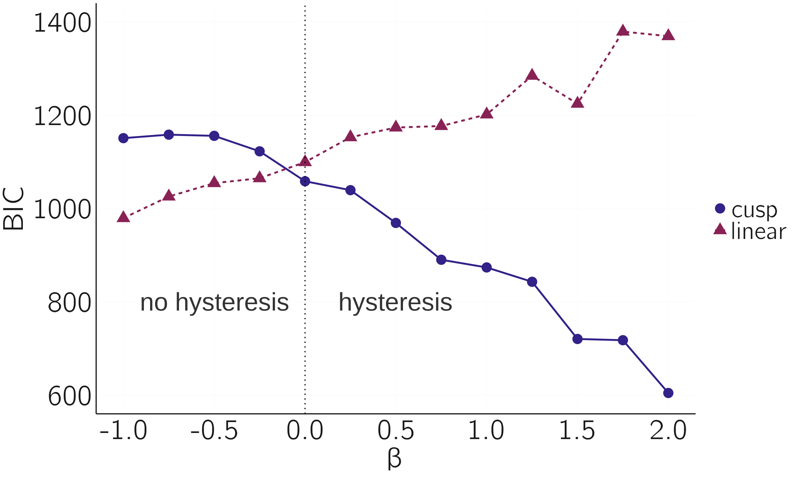
3.5.2.2 経験的な例
Grasman, van der Maas, and Wagenmakers (2009) で、私たちは実データを用いたいくつかの例を提示している。もう一つの例として、以前ダイバージェンスの例として用いたストウファーのデータを用いる（figure fig-ch3-img21-old-33 を参照）。
x <- read.table('data/stoufer.txt')
colnames(x) <- c('IntensityofFeeling', 'Attitude')
fit <- cusp(y ~ Attitude, alpha ~ IntensityofFeeling,
beta ~ IntensityofFeeling, x)
summary(fit)パラメータ推定値を調べると、予想どおり、感情の強度は分裂軸にのみ負荷し、正規軸には負荷しないことがわかる。Figure fig-ch3-img24-old-36 は分岐集合内のデータの位置を示している（plot(fit)）。
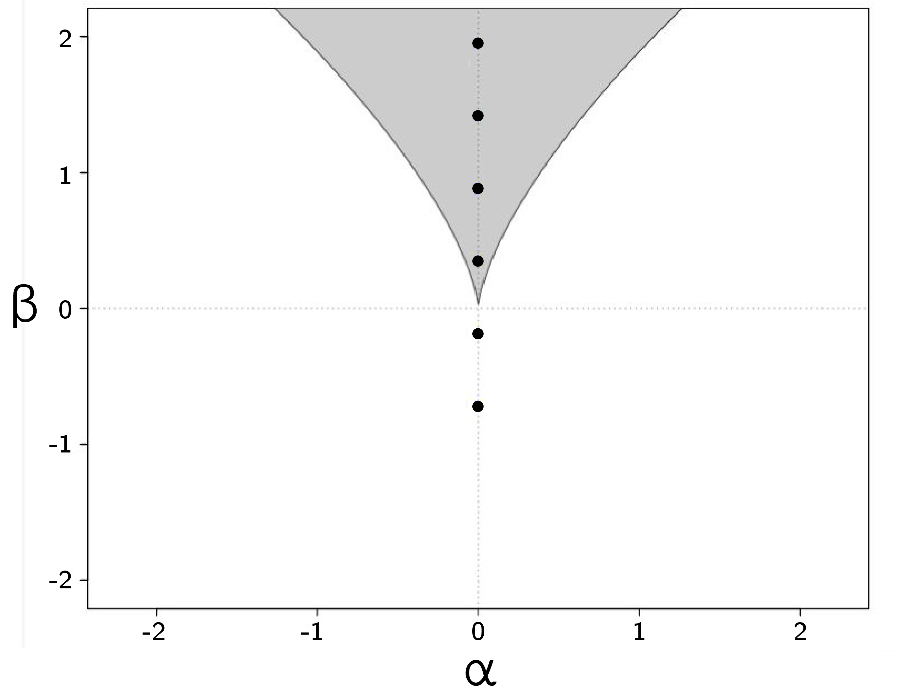
もう一つの例は Bentler (1970) の保存データセットである。これは、八つの異なる年齢群の560人の子どもの保存検査からの12項目の検査の得点を含む（figure fig-ch3-img25-old-37）。これらのデータは双峰的であり、正規軸に沿って動くことが期待される (van der Maas and Molenaar 1992)。
x <- read.table('data/bentler.txt', header = TRUE)
layout(t(1:8))
age <- c('age 4 to 4.5','age 4.5 to 5','age 5 to 5.5','age 5.5 to 6',
'age 6 to 6.5','age 6.5 to 7','age 7 to 7.5','age 7.5 to 8')
for(i in 1:8){
if(i == 1) {par(mar = c(4,3,2,1)); names = 0:12} else
{names = ''; par(mar = c(4,1,2,1))}
barplot(table(factor(x[x[,1] == i,2], levels = 0:12)),
horiz = TRUE, axes = FALSE,
main = age[i], xlab = '',
names = names, cex.main = 1.5, cex.names = 1.5)
}
fit <- cusp(y ~ score, alpha ~ age_range, beta ~ age_range, x)
summary(fit)
plot(fit)これはカスプの当てはめの結果によって支持される。beta ~ 1 のモデルが AIC と BIC に従ってより良く当てはまることを確認できる。
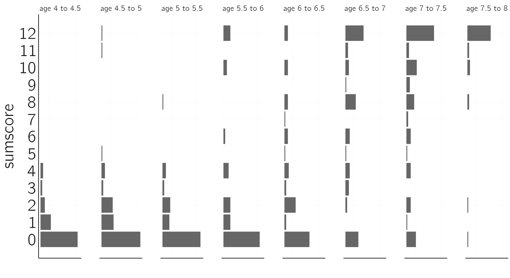
私たちが教室でしばしば用いてきた優れた演習は、ゼーマン機械を作り、それでデータを集め、カスプモデルをデータに当てはめることである (詳細は Grasman, van der Maas, and Wagenmakers 2009 を参照)。ゼーマンはカスプの性質を実演するためにこの機械を発明した。私たちの学生は、モデルの質と、そのゼーマン機械の芸術的価値に対して報酬を与えられた（figure fig-ch3-img26-old-38）。
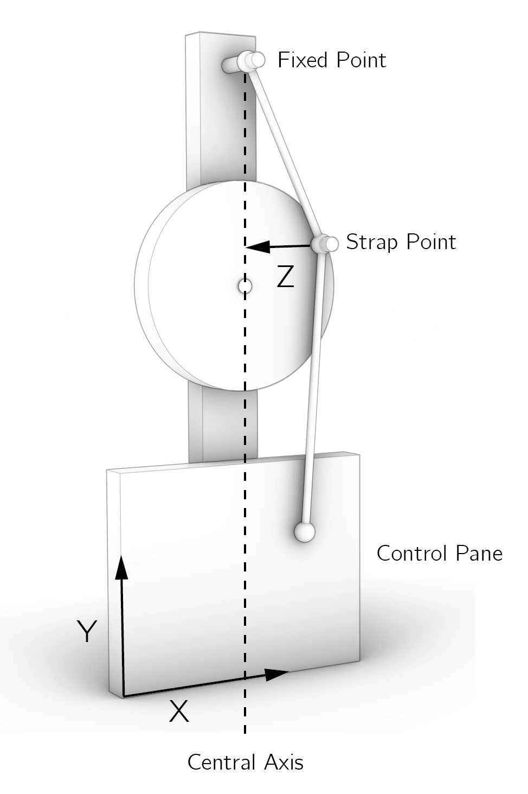
3.5.2.3 評価
いくつかの最後の注釈。第一に、コブの方法は横断的データで用いることができる。 データ点は独立であるべきである。時系列でヒステリシスを検証するには、他のアプローチが必要である。一つの選択肢は、Dutilh et al. (2011) のように隠れマルコフモデルを用いることである。
コブの方法は時系列には妥当でない。
第二に、確率分布とポテンシャル関数の間の根本的な違いによる、コブのアプローチのいくつかの問題がある。後者は、カスプの質的な性質を変えることなく、多くの仕方で変換できる（いわゆる局所微分同相写像）。確率分布に課される追加の制約（面積 = 1）のもとでは、同じ変換が、モードの数の変化のような質的な効果をもたらしうる。Wagenmakers et al. (2005) は、時系列についてこの問題への解決策を提案している。
第三に、二つの代替的なアプローチが提案されている。グアステロの (1982) 変化得点最小二乗回帰アプローチと Gemcat アプローチ (1987) は、どちらもカスプの一階導関数を出発点として用いる。両アプローチの問題は、安定な平衡状態と不安定な平衡状態を区別しないことである。到達不能領域のデータ点はモデルの当てはめを改善するが、本来はそれを減じるべきである。Alexander et al. (1992) は詳細な批判を提供している。
3.6 カタストロフィ理論への批判
Rosser (2007) はカタストロフィ理論の隆盛と衰退について語っている。Zeeman (1976) が Scientific American に発表した論文12——そこで彼は行動科学・社会科学におけるカタストロフィ理論の現象論的応用を導入した——に続く過熱は、Zahler and Sussmann (1977) による Nature での強い言葉での反論をもたらした。
私たちが仕事でカタストロフィ理論を用いるとき、人々はいまだにこの論文に言及するので、ザーラーとサスマンの主要な批判点に簡単に応答する。彼らはその序論で、物理学と工学におけるカタストロフィ理論の正当な用法はありうる、と述べている。
彼らは純粋に数学的な主題としてのカタストロフィ理論の正しさや重要性を疑問視しているのではない。
彼らは10の点を提起しており、そのいくつかにはすでに触れた。たとえば、彼らの第一の点はジャンプが実際にどれほど突然であるかについてだが、彼らはこれをそれほど深刻でない批判と呼んでいる。以前説明したように、重要なのは突然さではなく、中間状態が不安定であるかどうかである。
いくつかの点は、データからカスプを推論することについてであり、これはゼーマンの初期の仕事では実際かなり表面的に行われていた。彼らは、検証可能な予測がないこと、カスプの位置をずらせること、そしてデータがカスプに当てはまるかどうかを判定する方法がないことを指摘している。私は、これらの問題が大部分解決されたことを示せたと願っている。すなわち、カタストロフィ・フラグは新たな検証可能な予測を可能にし、コブの最尤アプローチによって、現代科学の他のどんな統計モデルとも同様にモデルを当てはめられる。もちろん、心理学と社会科学における統計の使用には批判的でありうるが、これらの批判はカタストロフィ理論に固有のものではない。
もう一つの、いくぶん一貫性を欠く批判の系譜は、心理学と社会科学における多くのカタストロフィモデルが単に誤っていてデータと矛盾している（これは真かもしれない）と同時に、反証可能でもない、というものである。しかし、両方を同時に主張することはできない。もし誤っている、あるいはデータと矛盾しているなら、それは反証可能である。とはいえ、反証可能性について考えることが重要であることには同意する。心理学の理論は動く標的である傾向がある。誰かが理論と矛盾する経験的結果を見出すや否や、理論は素早く修正される。
次にザーラーとサスマンは、カタストロフィ理論家がしばしば離散的な変数を連続的なものにしようとする、と指摘している。彼らの例は攻撃性であり、彼らはこれが本質的に離散的だと考えている。彼らは、攻撃性を連続的な振る舞いの族として解釈するゼーマンの解釈を、不条理でまったく無意味だと呼んでいる。これは少し強すぎるかもしれない。攻撃性が、軽度から重度へ、あるいは言語的から身体的へ、人の所有物に向けられたもの、人に向けられた軽度の身体的なものから重度の身体的なものへと変化しうる状況を考えることができる。攻撃的行為の豊かな順序づけは、家庭内暴力を記述するのに非常に有用である。時にはこれらの行為ないし変種に沿った変化は緩やかであり、また時には突然である。そのような順序づけを量的な連続体として扱えるかどうかは、私たちの分野で最も難しい問いの一つである (Borsboom et al. 2016; Michell 2008)。
ザーラーとサスマンの最後の点は、量子力学、離散数学、そして分岐理論のような、より良い代替物が存在する、というものである。心理学における量子力学の仕事は（とりわけ意識の文脈で）あるが、それがこの分野で飛躍的な進展をもたらすかどうかは今後を見なければならない。離散数学はある場合（たとえば記号的思考をモデル化するのに）代替物となりうる。私はカタストロフィ理論を分岐理論の特別な一分野とみなしており、研究対象のシステムを数学的方程式で記述するのが難しいときに特に有用だと考えている。これは現象論的モデルとメカニズム的モデルの区別に立ち戻る。私たちは第一原理に基づくメカニズム的モデルの開発により多くの努力を注ぐべきだと思う。これについては次の章で詳述する。
Loehle (1989) は、生態系のモデリングの文脈におけるカタストロフィ理論の有用性について優れた議論を提示している。彼は「カタストロフィモデルを適用する際の未解決の問題は、モデルのデータへの当てはめの良さを検証することである」と結論しているが、この問題は今や大部分解決された。
カスプモデルを当てはめるためのコブの方法と併せてカタストロフィ・フラグを用いる経験的プログラムは、カタストロフィ理論に対する以前の批判の多くを回避する。
3.7 結論
心理学者はしばしば、心理学的なタイプやクラス、段階や相、そしてそれらの間の転移に関心をもつ。分岐の基本を知れば、転移についての私たちの考えははるかに明晰で進んだものになる。
カタストロフィ理論は、行動科学・社会科学のための道具箱を備えている。私たちは現象論的モデルを構築し、カタストロフィ・フラグを検証し、さらにカスプモデルをデータに当てはめることができる。この道具箱の発展とともに、カタストロフィ理論への批判のほとんどはその意義を失う。
しかし、改善の余地はある。現象論的モデルは説明力に限りがある。力学系モデルに関する次章で説明するように、現象論的モデルの使用を支持する、よりメカニズム的なモデルを作ることが可能である。第6章 sec-Ising-attitude-model では、ネットワークを用いたもう一つの選択肢が導入される。態度についてのイジングネットワークモデルの振る舞いがカスプモデルによって支配されること、そしてそれが妊娠中絶に対する態度について提案されたカスプモデルと非常に似ていることを、私は実演する。
3.8 演習問題
折り目の平衡状態は \(X = \pm \sqrt{\frac{a}{3}}\) である。これは一階導関数を 0 に設定することで確認できる。これを示せ。(*)
ゼーマンの犬の攻撃性モデルにおいて、恐怖と怒りは「回転させた」制御変数である。これを回転させていない軸をもつモデルにどう翻訳できるか。恐怖と怒りの関数として正規軸と分裂軸を指定する方程式を提示せよ。(*)
一階導関数と二階導関数を 0 に設定することで、カスプの分岐線の方程式（\(27a^{2} = 4b^{3}\)）を導け。GeoGebra または Desmos で分岐線をプロットせよ。(**)
蝶カタストロフィ \(V(X) = {- aX - bX^{2} - cX}^{3} - dX^{4} + X^{6}\) についてのいくらかの洞察は、Desmos や GeoGebra のような無料のオンライングラフ計算機に方程式を入力することで得られる。\(a\)、\(b\)、\(c\)、\(d\) を 0、-5、0、5 に設定せよ。それから \(a\) と \(c\) を変化させ始めよ。アトラクタの出現と消失に対するこれら二つのパラメータの効果の違いは何か。(**)
恋に落ちることについての現象論的カスプを立てよ。私の指針に従え（sec-Phenomenological-models を参照）。(**)
age_rangeが正規軸にのみ負荷するとき、実際にベントラーのデータがより良く当てはまるかどうか（AIC と BIC に従って）を確認せよ。この場合、cusp()におけるbetaの正しい指定は何か。(*)この R コードで作成された厄介なデータセットについて、（BIC に従って）最も良く当てはまるカスプモデルは何か。なぜか。(**)
n <- 500 z <- Vectorize(rcusp)(1, .7 * rnorm(n), 2 + 2 * rnorm(n)) # sample z x <- rnorm(n) y <- rnorm(n) data <- data.frame(z, x, y) # collect variables in dataゼーマン機械を作り、データを集め、カスプを当てはめよ (Grasman, van der Maas, and Wagenmakers 2009 の例 III を参照)。あなたの最も良く当てはまるモデルは何か。分岐集合内のデータのプロットと、あなたのゼーマン機械の写真を提示せよ。(**)
Alexander, Ralph A., Glenn R. Herbert, Richard P. DeShon, and Paul J. Hanges. 1992. “An Examination of Least-Squares Regression Modeling of Catastrophe Theory.” Psychological Bulletin 111: 366–74. https://doi.org/10.1037/0033-2909.111.2.366.
Arnaud, M. 2021. “Mixture Modelling from Scratch, in R.” Medium. https://towardsdatascience.com/mixture-modelling-from-scratch-in-r-5ab7bfc83eef.
Bentler, P. M. 1970. “Evidence Regarding Stages in the Development of Conservation.” Perceptual and Motor Skills 31 (3): 855–59. https://doi.org/10.2466/pms.1970.31.3.855.
Borsboom, Denny, Mijke Rhemtulla, Angélique O. J. Cramer, Han L. J. van der Maas, M. Scheffer, and C. V. Dolan. 2016. “Kinds Versus Continua: A Review of Psychometric Approaches to Uncover the Structure of Psychiatric Constructs.” Psychological Medicine 46 (8): 1567–79. https://doi.org/10.1017/S0033291715001944.
Burg, Gerrit J. J. van den, and Christopher K. I. Williams. 2022. “An Evaluation of Change Point Detection Algorithms.” arXiv. https://doi.org/10.48550/arXiv.2003.06222.
Cobb, Loren. 1978. “Stochastic Catastrophe Models and Multimodal Distributions.” Behavioral Science 23 (4): 360–74. https://doi.org/10.1002/bs.3830230407.
Cobb, Loren, and Shelemyahu Zacks. 1985. “Applications of Catastrophe Theory for Statistical Modeling in the Biosciences.” Journal of the American Statistical Association 80 (392): 793–802. https://doi.org/10.1080/01621459.1985.10478184.
Cohen, Alexander, David Pargman, and Gershon Tenenbaum. 2003. “Critical Elaboration and Empirical Investigation of the Cusp Catastrophe Model: A Lesson for Practitioners.” Journal of Applied Sport Psychology 15 (2): 144–59. https://doi.org/10.1080/10413200305393.
Dablander, Fabian, Anton Pichler, Arta Cika, and Andrea Bacilieri. 2023. “Anticipating Critical Transitions in Psychological Systems Using Early Warning Signals: Theoretical and Practical Considerations.” Psychological Methods 28 (4): 765–90. https://doi.org/10.1037/met0000450.
Dakos, Vasilis, Stephen R. Carpenter, William A. Brock, Aaron M. Ellison, Vishwesha Guttal, Anthony R. Ives, Sonia Kéfi, et al. 2012. “Methods for Detecting Early Warnings of Critical Transitions in Time Series Illustrated Using Simulated Ecological Data.” PloS One 7 (7): e41010. https://doi.org/10.1371/journal.pone.0041010.
Dodson, M. M., and A. Hallam. 1977. “Allopatric Speciation and the Fold Catastrophe.” The American Naturalist 111 (979): 415–33. https://doi.org/10.1086/283176.
Dolan, Conor V., and Han L. J. van der Maas. 1998. “Fitting Multivariage Normal Finite Mixtures Subject to Structural Equation Modeling.” Psychometrika 63 (3): 227–53. https://doi.org/10.1007/BF02294853.
Dutilh, Gilles, Eric-Jan Wagenmakers, Ingmar Visser, and van der Han L. J. Maas. 2011. “A Phase Transition Model for the Speed-Accuracy Trade-Off in Response Time Experiments.” Cognitive Science 35 (2): 211–50. https://doi.org/10.1111/j.1551-6709.2010.01147.x.
Ebaugh, Helen Rose Fuchs. 1988. Becoming an Ex: The Process of Role Exit. University of Chicago Press.
Gilmore, Robert. 1993. Catastrophe Theory for Scientists and Engineers. Courier Corporation.
Grasman, Raoul, Han L. J. van der Maas, and Eric-Jan Wagenmakers. 2009. “Fitting the Cusp Catastrophe in R: A Cusp Package Primer.” Journal of Statistical Software 032 (i08). https://ideas.repec.org/a/jss/jstsof/v032i08.html.
Guastello, Stephen J. 1982. “Moderator Regression and the Cusp Catastrophe: Application of Two-Stage Personnel Selection, Training, Therapy, and Policy Evaluation.” Behavioral Science 27 (3): 259–72. https://doi.org/10.1002/bs.3830270305.
———. 1984. “Cusp and Butterfly Catastrophe Modeling of Two Opponent Process Models: Drug Addiction and Work Performance.” Behavioral Science 29 (4): 258262. https://www.proquest.com/docview/1301285594/citation/C898CBB773DF4B72PQ/1.
Guckenheimer, John, and Philip Holmes. 1983. “Global Bifurcations.” In Nonlinear Oscillations, Dynamical Systems, and Bifurcations of Vector Fields, edited by John Guckenheimer and Philip Holmes, 289–352. Applied Mathematical Sciences. New York, NY: Springer. https://doi.org/10.1007/978-1-4612-1140-2_6.
Güémez, J., C. Fiolhais, and M. Fiolhais. 2002. “The Cartesian Diver and the Fold Catastrophe.” American Journal of Physics 70 (7): 710–14. https://doi.org/10.1119/1.1477433.
Haken, Hermann. 1977. “Synergetics.” Physics Bulletin 28 (9): 412. https://doi.org/10.1088/0031-9112/28/9/027.
Hardy, Lew. 1996. “Testing the Predictions of the Cusp Catastrophe Model of Anxiety and Performance.” The Sport Psychologist 10 (2): 140–56. https://doi.org/10.1123/tsp.10.2.140.
Hardy, Lew, and Gaynor Parfitt. 1991. “A Catastrophe Model of Anxiety and Performance.” British Journal of Psychology 82 (2): 163–78. https://doi.org/10.1111/j.2044-8295.1991.tb02391.x.
Hardy, Lew, Tim Woodman, and Stephen Carrington. 2004. “Is Self-Confidence a Bias Factor in Higher-Order Catastrophe Models? An Exploratory Analysis.” Journal of Sport and Exercise Psychology 26 (3): 359–68. https://doi.org/10.1123/jsep.26.3.359.
James, Nicholas A., and David S. Matteson. 2014. “Ecp : An R Package for Nonparametric Multiple Change Point Analysis of Multivariate Data.” Journal of Statistical Software 62 (7). https://doi.org/10.18637/jss.v062.i07.
Jansen, Brenda R. J., and Han L. J. van der Maas. 2001. “Evidence for the Phase Transition from Rule I to Rule II on the Balance Scale Task.” Developmental Review 21 (4): 450494. https://doi.org/10.1006/drev.2001.0530.
Kreitler, Shulamith, and Hans Kreitler. 1989. “Horizontal Decalage: A Problem and Its Solution.” Cognitive Development 4 (1): 89–119. https://doi.org/10.1016/0885-2014(89)90006-3.
Latané, Bibb, and Andrzej Nowak. 1994. “Attitudes as Catastrophes: From Dimensions to Categories with Increasing Involvement.” In Dynamical Systems in Social Psychology, 219–49. San Diego, CA, US: Academic Press.
Leemput, van de Ingrid A., Marieke Wichers, Angélique O. J. Cramer, Denny Borsboom, Francis Tuerlinckx, Peter Kuppens, van Egbert H. Nes, et al. 2014. “Critical Slowing down as Early Warning for the Onset and Termination of Depression.” Proceedings of the National Academy of Sciences 111 (1): 87–92. https://doi.org/10.1073/pnas.1312114110.
Loehle, Craig. 1989. “Catastrophe Theory in Ecology: A Critical Review and an Example of the Butterfly Catastrophe.” Ecological Modelling 49 (1): 125–52. https://doi.org/10.1016/0304-3800(89)90047-1.
Ludwig, D., D. D. Jones, and C. S. Holling. 1978. “Qualitative Analysis of Insect Outbreak Systems: The Spruce Budworm and Forest.” Journal of Animal Ecology 47 (1): 315–32. https://doi.org/10.2307/3939.
Mazanov, Jason, and D. G. Byrne. 2006. “A Cusp Catastrophe Model Analysis of Changes in Adolescent Substance Use: Assessment of Behavioural Intention as a Bifurcation Variable.” Nonlinear Dynamics, Psychology, and Life Sciences 10: 445–70.
McLachlan, Geoffrey J., Sharon X. Lee, and Suren I. Rathnayake. 2019. “Finite Mixture Models.” Annual Review of Statistics and Its Application 6 (1): 355–78. https://doi.org/10.1146/annurev-statistics-031017-100325.
McRobie, Allan. 2017. The Seduction of Curves: The Lines of Beauty That Connect Mathematics, Art, and the Nude. Princeton University Press.
Michell, Joel. 2008. “Is Psychometrics Pathological Science?” Measurement: Interdisciplinary Research and Perspectives 6 (January): 7–24. https://doi.org/10.1080/15366360802035489.
Oliva, Terence A., Wayne S. Desarbo, Diana L. Day, and Kamel Jedidi. 1987. “Gemcat: A General Multivariate Methodology for Estimating Catastrophe Models.” Behavioral Science 32 (2): 121–37. https://doi.org/10.1002/bs.3830320205.
Olthof, Merlijn, Fred Hasselman, Guido Strunk, Marieke van Rooij, Benjamin Aas, Marieke A. Helmich, Günter Schiepek, and Anna Lichtwarck-Aschoff. 2020. “Critical Fluctuations as an Early-Warning Signal for Sudden Gains and Losses in Patients Receiving Psychotherapy for Mood Disorders.” Clinical Psychological Science 8 (1): 25–35. https://doi.org/10.1177/2167702619865969.
Paulos, John Allen. 2008. Mathematics and Humor. University of Chicago Press.
Ploeger, Annemie, Han L. J. van der Maas, and Pascal A. I. Hartelman. 2002. “Stochastic Catastrophe Analysis of Switches in the Perception of Apparent Motion.” Psychonomic Bulletin & Review 9 (1): 26–42. https://doi.org/10.3758/BF03196255.
Poston, Tim, and Ian Stewart. 2014. Catastrophe Theory and Its Applications. Courier Corporation.
Rosser, J. Barkley. 2007. “The Rise and Fall of Catastrophe Theory Applications in Economics: Was the Baby Thrown Out with the Bathwater?” Journal of Economic Dynamics and Control 31 (10): 3255–80. https://doi.org/10.1016/j.jedc.2006.09.013.
Stevens, S. S. 1957. “On the Psychophysical Law.” Psychological Review 64 (3): 153181. https://doi.org/10.1037/h0046162.
Stewart, Ian. 1982. “Catastrophe Theory in Physics.” Reports on Progress in Physics 45 (2): 185–221. https://doi.org/10.1088/0034-4885/45/2/002.
Stewart, Ian, and P. L. Peregoy. 1983. “Catastrophe Theory Modeling in Psychology.” Psychological Bulletin 94: 336–62. https://doi.org/10.1037/0033-2909.94.2.336.
Stouffer, Samuel A., Edward A. Suchman, Leland C. Devinney, Shirley A. Star, and Robin M. Williams Jr. 1949. The American Soldier: Adjustment During Army Life. (Studies in Social Psychology in World War II), Vol. 1. The American Soldier: Adjustment During Army Life. (Studies in Social Psychology in World War II), Vol. 1. Oxford, England: Princeton Univ. Press.
Thom, René. 1977. “Structural Stability, Catastrophe Theory, and Applied Mathematics.” SIAM Review 19 (2): 189–201. https://doi.org/10.1137/1019036.
Tschacher, Wolfgang, and Hermann Haken. 2023. “A Complexity Science Account of Humor.” Entropy 25 (2): 341. https://doi.org/10.3390/e25020341.
van der Maas, Han L. J., Rogier Kolstein, and Joop van der Pligt. 2003. “Sudden Transitions in Attitudes.” Sociological Methods & Research 32 (2): 125–52. https://doi.org/10.1177/0049124103253773.
van der Maas, Han L. J., and Peter C. M. Molenaar. 1992. “Stagewise Cognitive Development: An Application of Catastrophe Theory.” Psychological Review 99 (3): 395–417. https://doi.org/10.1037/0033-295X.99.3.395.
Visser, Ingmar, and Maarten Speekenbrink. 2022. Mixture and Hidden Markov Models with R. Springer International Publishing.
Wagenmakers, Eric-Jan, Peter C. M. Molenaar, Raoul P. P. P. Grasman, Pascal A. I. Hartelman, and Han L. J. van der Maas. 2005. “Transformation Invariant Stochastic Catastrophe Theory.” Physica D: Nonlinear Phenomena 211 (3): 263–76. https://doi.org/10.1016/j.physd.2005.08.014.
Wichers, Marieke, Peter C. Groot, and ESM Group Psychosystems. 2016. “Critical Slowing Down as a Personalized Early Warning Signal for Depression.” Psychotherapy and Psychosomatics 85 (2): 114–16. https://doi.org/10.1159/000441458.
Witkiewitz, Katie, Han L. J. van der Maas, Michael R. Hufford, and G. Alan Marlatt. 2007. “Nonnormality and Divergence in Posttreatment Alcohol Use: Reexamining the Project MATCH Data "Another Way.".” Journal of Abnormal Psychology 116: 378–94. https://doi.org/10.1037/0021-843X.116.2.378.
Zahler, Raphael S., and Hector J. Sussmann. 1977. “Claims and Accomplishments of Applied Catastrophe Theory.” Nature 269 (October): 759–63. https://doi.org/10.1038/269759a0.
Zeeman, E. C. 1976. “Catastrophe Theory.” Scientific American 234 (4): 65–83.
特定の保存課題を習得することはかなり突然であるように見えるが、数の保存の習得と体積の保存の習得の間には、二年ほどの隔たりが容易に生じうる (Kreitler and Kreitler 1989)。これは段階理論と矛盾する。↩︎
関連するよく似た区別は、亜臨界分岐と超臨界分岐の間の区別である。↩︎
sec-Cobbs-maximum-likelihood-approach で見るように、二次のポテンシャル関数の統計的な等価物は正規分布であり、私たちの統計的な仕事で最も人気のある分布である。↩︎
三次方程式は容易には解けない。これは、カスプが \(y = f(x)\) の形の関数ではないという事実による。関数は \(x\) の各要素にちょうど一つの \(y\) の要素を割り当てる。しかし双安定系では、一つの \(x\) の値に二つの \(y\) の値を割り当てる。↩︎
この見方を「選択反対（アンチチョイス）」と呼ぶほうがおそらくよい。↩︎
蝶カタストロフィとカオス理論におけるバタフライ効果はまったく無関係の概念である、ということを指摘しておく。↩︎
これらの指針と例が与えられれば、たとえば恋に落ちることについて、自分自身のカスプモデルを開発することは興味深い演習である。これは厄介な演習である。↩︎
この方法は、観察されたデータを最も確からしくするパラメータ値を見つける。↩︎
これには多くの異なる記法が存在する。\(dX\) も \(dW\) も時間に依存するので、\(dX(t) = - V^{'}\left( X(t) \right)dt + \sigma dW(t)\) とするほうがおそらく明確である。↩︎
後の章との整合性のために、私は \(Z\) を Grasman, van der Maas, and Wagenmakers (2009) の記法とは異なる仕方で定義する。それはその論文の \(Z\) の逆数である。↩︎
ゼーマンの仕事ぶりを見るには、BBC のドキュメンタリー『Case Study Catastrophe Theory Maths Foundation Course』（https://www.youtube.com/watch?v=myDvcvox1V4&t=1435s）を推薦する。↩︎